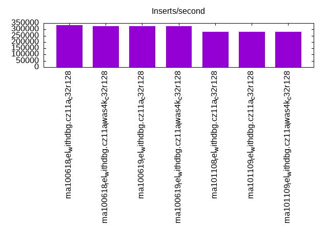
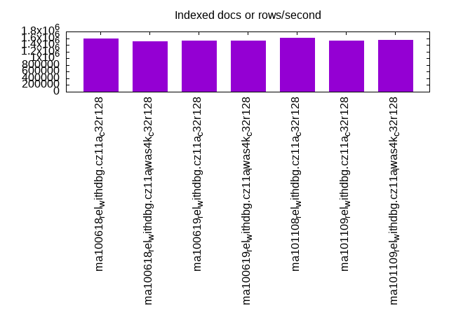
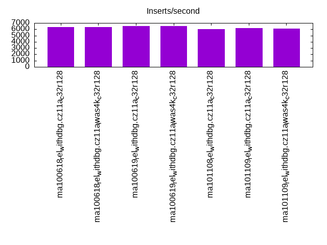
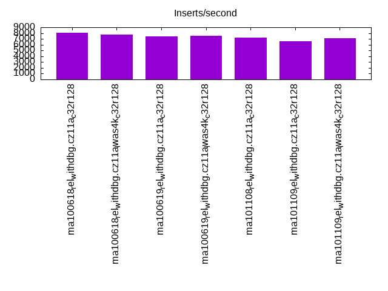
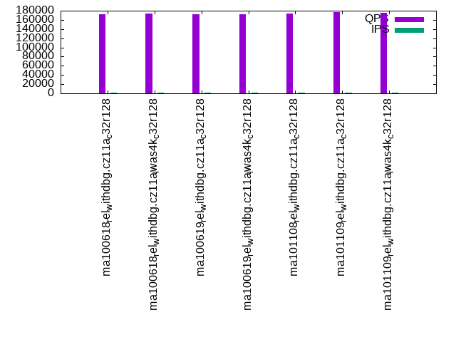
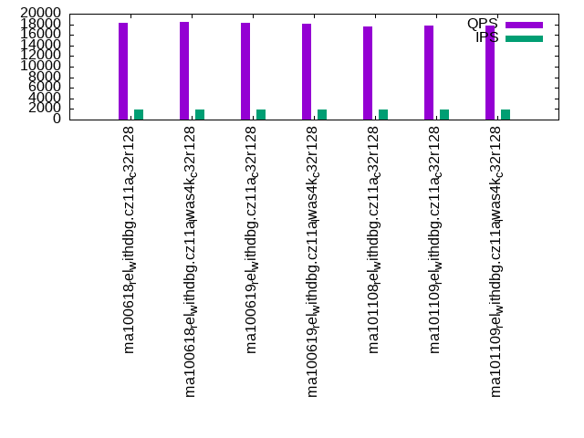
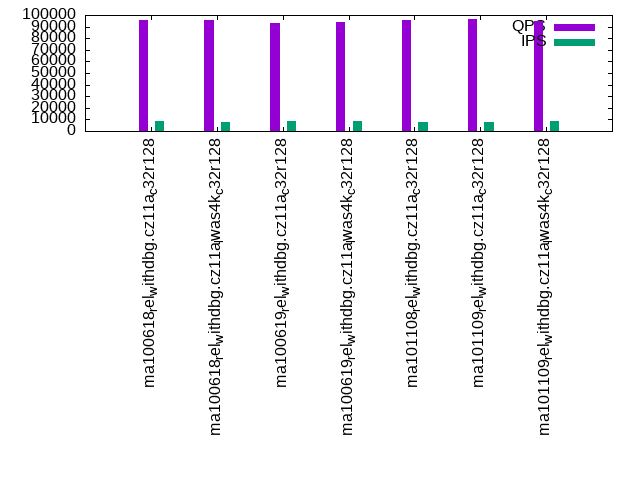
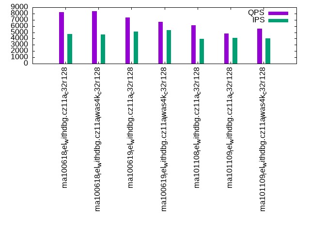
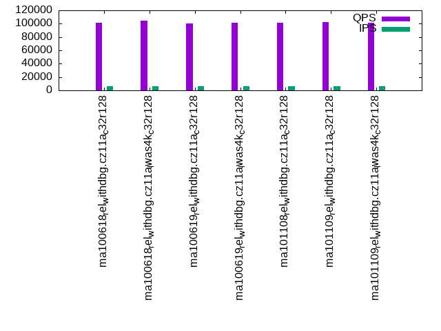
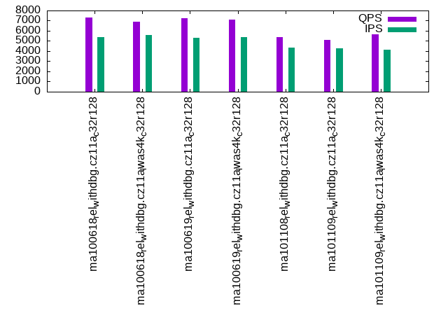

This is a report for the insert benchmark with 4000M docs and 20 client(s). It is generated by scripts (bash, awk, sed) and Tufte might not be impressed. An overview of the insert benchmark is here and a short update is here. Below, by DBMS, I mean DBMS+version.config. An example is my8020.c10b40 where my means MySQL, 8020 is version 8.0.20 and c10b40 is the name for the configuration file.
The test server is an ax162-s from Hetzner (see here) with 48 cores, AMD SMT disabled, 128G RAM and ext4 using 2 NVMe devices with SW RAID 1. The benchmark was run with 20 clients and there were 1 or 3 connections per client (1 for queries or inserts without rate limits, 1+1 for rate limited inserts+deletes). It uses 8 tables with a table per client. It loads 200M rows per table without secondary indexes, creates 3 secondary indexes per table, then inserts 4m+1m rows per table with a delete per insert to avoid growing the table. It then does 6 read+write tests for 1800s each that do queries as fast as possible with 100,100,500,500,1000,1000 inserts/s and the same for deletes/s per client concurrent with the queries. The database is larger than memory. Clients and the DBMS share one server.
The tested DBMS are:
The numbers are inserts/s for l.i0, l.i1 and l.i2, indexed docs (or rows) /s for l.x and queries/s for qr100, qp100 thru qr1000, qp1000" The values are the average rate over the entire test for inserts (IPS) and queries (QPS). The range of values for IPS and QPS is split into 3 parts: bottom 25%, middle 50%, top 25%. Values in the bottom 25% have a red background, values in the top 25% have a green background and values in the middle have no color. A gray background is used for values that can be ignored because the DBMS did not sustain the target insert rate. Red backgrounds are not used when the minimum value is within 80% of the max value.
| dbms | l.i0 | l.x | l.i1 | l.i2 | qr100 | qp100 | qr500 | qp500 | qr1000 | qp1000 |
|---|---|---|---|---|---|---|---|---|---|---|
| ma100618_rel_withdbg.cz11a_c32r128 | 332474 | 1589194 | 6345 | 8042 | 172045 | 18274 | 95942 | 8260 | 101389 | 7308 |
| ma100618_rel_withdbg.cz11a_lwas4k_c32r128 | 326531 | 1516875 | 6373 | 7755 | 173142 | 18374 | 95306 | 8357 | 104580 | 6903 |
| ma100619_rel_withdbg.cz11a_c32r128 | 324675 | 1520334 | 6535 | 7383 | 171886 | 18225 | 93324 | 7381 | 100056 | 7253 |
| ma100619_rel_withdbg.cz11a_lwas4k_c32r128 | 324517 | 1520334 | 6495 | 7556 | 171676 | 18139 | 94134 | 6688 | 101603 | 7103 |
| ma101108_rel_withdbg.cz11a_c32r128 | 282486 | 1614205 | 6017 | 7225 | 173023 | 17662 | 95370 | 6127 | 101699 | 5408 |
| ma101109_rel_withdbg.cz11a_c32r128 | 280505 | 1536098 | 6195 | 6625 | 176360 | 17785 | 96906 | 4820 | 102202 | 5109 |
| ma101109_rel_withdbg.cz11a_lwas4k_c32r128 | 279076 | 1549187 | 6121 | 7135 | 175678 | 17794 | 94950 | 5573 | 101317 | 5674 |
This table has relative throughput, throughput for the DBMS relative to the DBMS in the first line, using the absolute throughput from the previous table. Values less than 0.95 have a yellow background. Values greater than 1.05 have a blue background.
| dbms | l.i0 | l.x | l.i1 | l.i2 | qr100 | qp100 | qr500 | qp500 | qr1000 | qp1000 |
|---|---|---|---|---|---|---|---|---|---|---|
| ma100618_rel_withdbg.cz11a_c32r128 | 1.00 | 1.00 | 1.00 | 1.00 | 1.00 | 1.00 | 1.00 | 1.00 | 1.00 | 1.00 |
| ma100618_rel_withdbg.cz11a_lwas4k_c32r128 | 0.98 | 0.95 | 1.00 | 0.96 | 1.01 | 1.01 | 0.99 | 1.01 | 1.03 | 0.94 |
| ma100619_rel_withdbg.cz11a_c32r128 | 0.98 | 0.96 | 1.03 | 0.92 | 1.00 | 1.00 | 0.97 | 0.89 | 0.99 | 0.99 |
| ma100619_rel_withdbg.cz11a_lwas4k_c32r128 | 0.98 | 0.96 | 1.02 | 0.94 | 1.00 | 0.99 | 0.98 | 0.81 | 1.00 | 0.97 |
| ma101108_rel_withdbg.cz11a_c32r128 | 0.85 | 1.02 | 0.95 | 0.90 | 1.01 | 0.97 | 0.99 | 0.74 | 1.00 | 0.74 |
| ma101109_rel_withdbg.cz11a_c32r128 | 0.84 | 0.97 | 0.98 | 0.82 | 1.03 | 0.97 | 1.01 | 0.58 | 1.01 | 0.70 |
| ma101109_rel_withdbg.cz11a_lwas4k_c32r128 | 0.84 | 0.97 | 0.96 | 0.89 | 1.02 | 0.97 | 0.99 | 0.67 | 1.00 | 0.78 |
This lists the average rate of inserts/s for the tests that do inserts concurrent with queries. For such tests the query rate is listed in the table above. The read+write tests are setup so that the insert rate should match the target rate every second. Cells that are not at least 95% of the target have a red background to indicate a failure to satisfy the target.
| dbms | qr100.L1 | qp100.L2 | qr500.L3 | qp500.L4 | qr1000.L5 | qp1000.L6 |
|---|---|---|---|---|---|---|
| ma100618_rel_withdbg.cz11a_c32r128 | 1976 | 1976 | 8388 | 4763 | 6675 | 5396 |
| ma100618_rel_withdbg.cz11a_lwas4k_c32r128 | 1976 | 1976 | 8156 | 4662 | 6458 | 5577 |
| ma100619_rel_withdbg.cz11a_c32r128 | 1976 | 1976 | 8423 | 5114 | 6494 | 5314 |
| ma100619_rel_withdbg.cz11a_lwas4k_c32r128 | 1976 | 1976 | 8310 | 5389 | 6244 | 5392 |
| ma101108_rel_withdbg.cz11a_c32r128 | 1977 | 1976 | 8061 | 3950 | 5968 | 4337 |
| ma101109_rel_withdbg.cz11a_c32r128 | 1976 | 1976 | 7829 | 4114 | 5738 | 4290 |
| ma101109_rel_withdbg.cz11a_lwas4k_c32r128 | 1976 | 1976 | 8299 | 4047 | 6053 | 4115 |
| target | 2000 | 2000 | 10000 | 10000 | 20000 | 20000 |
l.i0: load without secondary indexes. Graphs for performance per 1-second interval are here.
Average throughput:
Insert response time histogram: each cell has the percentage of responses that take <= the time in the header and max is the max response time in seconds. For the max column values in the top 25% of the range have a red background and in the bottom 25% of the range have a green background. The red background is not used when the min value is within 80% of the max value.
| dbms | 256us | 1ms | 4ms | 16ms | 64ms | 256ms | 1s | 4s | 16s | gt | max |
|---|---|---|---|---|---|---|---|---|---|---|---|
| ma100618_rel_withdbg.cz11a_c32r128 | 0.139 | 1.294 | 98.331 | 0.044 | 0.112 | 0.081 | 0.672 | ||||
| ma100618_rel_withdbg.cz11a_lwas4k_c32r128 | 0.105 | 0.777 | 98.879 | 0.047 | 0.112 | 0.080 | 0.657 | ||||
| ma100619_rel_withdbg.cz11a_c32r128 | 0.107 | 0.732 | 98.932 | 0.037 | 0.111 | 0.081 | 0.667 | ||||
| ma100619_rel_withdbg.cz11a_lwas4k_c32r128 | 0.131 | 0.817 | 98.821 | 0.042 | 0.109 | 0.081 | 0.659 | ||||
| ma101108_rel_withdbg.cz11a_c32r128 | 0.074 | 0.305 | 99.376 | 0.046 | 0.106 | 0.093 | 0.661 | ||||
| ma101109_rel_withdbg.cz11a_c32r128 | 0.070 | 0.237 | 99.449 | 0.042 | 0.107 | 0.095 | 0.668 | ||||
| ma101109_rel_withdbg.cz11a_lwas4k_c32r128 | 0.110 | 0.245 | 99.407 | 0.036 | 0.106 | 0.096 | 0.677 |
Performance metrics for the DBMS listed above. Some are normalized by throughput, others are not. Legend for results is here.
ips qps rps rmbps wps wmbps rpq rkbpq wpi wkbpi csps cpups cspq cpupq dbgb1 dbgb2 rss maxop p50 p99 tag 332474 0 1 0.0 2334.3 97.4 0.000 0.000 0.007 0.300 856927 50.8 2.577 73 263.2 365.2 101.4 0.672 17681 200 ma100618_rel_withdbg.cz11a_c32r128 326531 0 2 0.1 2301.7 95.7 0.000 0.000 0.007 0.300 864796 51.0 2.648 75 263.2 365.2 101.4 0.657 17082 200 ma100618_rel_withdbg.cz11a_lwas4k_c32r128 324675 0 2 0.0 2275.9 95.0 0.000 0.000 0.007 0.300 863264 51.0 2.659 75 263.2 365.2 101.4 0.667 16987 200 ma100619_rel_withdbg.cz11a_c32r128 324517 0 1 0.0 2280.3 95.0 0.000 0.000 0.007 0.300 882386 50.8 2.719 75 263.2 365.2 101.4 0.659 17082 200 ma100619_rel_withdbg.cz11a_lwas4k_c32r128 282486 0 2686 10.5 2008.0 85.1 0.010 0.038 0.007 0.308 256601 50.2 0.908 85 263.2 365.2 101.4 0.661 14784 200 ma101108_rel_withdbg.cz11a_c32r128 280505 0 2614 10.2 1993.3 84.5 0.009 0.037 0.007 0.308 252763 50.6 0.901 87 263.2 365.2 101.4 0.668 14584 200 ma101109_rel_withdbg.cz11a_c32r128 279076 0 1 0.0 1983.2 84.0 0.000 0.000 0.007 0.308 241798 51.1 0.866 88 263.2 365.1 101.4 0.677 14584 200 ma101109_rel_withdbg.cz11a_lwas4k_c32r128
l.x: create secondary indexes.
Average throughput:
Performance metrics for the DBMS listed above. Some are normalized by throughput, others are not. Legend for results is here.
ips qps rps rmbps wps wmbps rpq rkbpq wpi wkbpi csps cpups cspq cpupq dbgb1 dbgb2 rss maxop p50 p99 tag 1589194 0 17318 1421.7 18586.1 1571.6 0.011 0.916 0.012 1.013 91399 23.2 0.058 7 557.5 659.5 101.8 0.002 NA NA ma100618_rel_withdbg.cz11a_c32r128 1516875 0 16526 1352.1 18114.3 1506.1 0.011 0.913 0.012 1.017 90744 22.8 0.060 7 557.5 659.5 101.8 0.002 NA NA ma100618_rel_withdbg.cz11a_lwas4k_c32r128 1520334 0 16548 1355.6 18105.8 1508.3 0.011 0.913 0.012 1.016 92279 23.4 0.061 7 557.5 659.5 101.8 0.002 NA NA ma100619_rel_withdbg.cz11a_c32r128 1520334 0 16570 1353.4 18145.3 1508.5 0.011 0.912 0.012 1.016 90501 23.4 0.060 7 557.5 659.5 101.8 0.002 NA NA ma100619_rel_withdbg.cz11a_lwas4k_c32r128 1614205 0 17524 1435.3 19225.7 1597.2 0.011 0.911 0.012 1.013 72953 24.8 0.045 7 557.5 659.5 101.8 0.002 NA NA ma101108_rel_withdbg.cz11a_c32r128 1536098 0 16806 1372.7 18422.0 1522.0 0.011 0.915 0.012 1.015 82615 23.3 0.054 7 557.5 659.5 101.8 0.006 NA NA ma101109_rel_withdbg.cz11a_c32r128 1549187 0 16856 1380.5 18183.8 1530.0 0.011 0.912 0.012 1.011 75231 23.9 0.049 7 557.5 659.4 101.8 0.004 NA NA ma101109_rel_withdbg.cz11a_lwas4k_c32r128
l.i1: continue load after secondary indexes created with 50 inserts per transaction. Graphs for performance per 1-second interval are here.
Average throughput:
Insert response time histogram: each cell has the percentage of responses that take <= the time in the header and max is the max response time in seconds. For the max column values in the top 25% of the range have a red background and in the bottom 25% of the range have a green background. The red background is not used when the min value is within 80% of the max value.
| dbms | 256us | 1ms | 4ms | 16ms | 64ms | 256ms | 1s | 4s | 16s | gt | max |
|---|---|---|---|---|---|---|---|---|---|---|---|
| ma100618_rel_withdbg.cz11a_c32r128 | 0.019 | 18.500 | 54.555 | 26.918 | 0.005 | 0.001 | 0.003 | 93.672 | |||
| ma100618_rel_withdbg.cz11a_lwas4k_c32r128 | 0.019 | 17.018 | 57.185 | 25.773 | 0.001 | 0.002 | 0.002 | 48.749 | |||
| ma100619_rel_withdbg.cz11a_c32r128 | 0.047 | 17.175 | 58.828 | 23.944 | 0.001 | 0.002 | 0.003 | 56.130 | |||
| ma100619_rel_withdbg.cz11a_lwas4k_c32r128 | 0.024 | 18.113 | 57.384 | 24.473 | 0.002 | 0.003 | 0.001 | 66.617 | |||
| ma101108_rel_withdbg.cz11a_c32r128 | 0.937 | 14.962 | 57.925 | 26.172 | nonzero | 0.001 | 0.003 | 49.840 | |||
| ma101109_rel_withdbg.cz11a_c32r128 | 1.281 | 14.880 | 59.094 | 24.743 | 0.001 | 70.919 | |||||
| ma101109_rel_withdbg.cz11a_lwas4k_c32r128 | 1.321 | 14.947 | 58.585 | 25.139 | 0.003 | 0.003 | 0.002 | 76.798 |
Delete response time histogram: each cell has the percentage of responses that take <= the time in the header and max is the max response time in seconds. For the max column values in the top 25% of the range have a red background and in the bottom 25% of the range have a green background. The red background is not used when the min value is within 80% of the max value.
| dbms | 256us | 1ms | 4ms | 16ms | 64ms | 256ms | 1s | 4s | 16s | gt | max |
|---|---|---|---|---|---|---|---|---|---|---|---|
| ma100618_rel_withdbg.cz11a_c32r128 | 0.103 | 47.317 | 27.511 | 25.065 | 0.001 | 0.001 | 0.001 | 87.278 | |||
| ma100618_rel_withdbg.cz11a_lwas4k_c32r128 | 0.092 | 45.368 | 30.180 | 24.356 | nonzero | 0.002 | 0.001 | 48.678 | |||
| ma100619_rel_withdbg.cz11a_c32r128 | 0.107 | 46.894 | 30.456 | 22.540 | nonzero | 0.002 | 0.001 | 55.333 | |||
| ma100619_rel_withdbg.cz11a_lwas4k_c32r128 | 0.060 | 46.042 | 30.913 | 22.981 | 0.001 | 0.001 | 0.001 | 65.612 | |||
| ma101108_rel_withdbg.cz11a_c32r128 | 9.878 | 24.395 | 41.739 | 23.986 | nonzero | 0.001 | nonzero | 49.751 | |||
| ma101109_rel_withdbg.cz11a_c32r128 | 9.588 | 25.151 | 42.757 | 22.502 | nonzero | nonzero | 0.001 | 70.828 | |||
| ma101109_rel_withdbg.cz11a_lwas4k_c32r128 | 10.092 | 24.675 | 42.370 | 22.859 | 0.001 | 0.002 | 0.001 | 76.742 |
Performance metrics for the DBMS listed above. Some are normalized by throughput, others are not. Legend for results is here.
ips qps rps rmbps wps wmbps rpq rkbpq wpi wkbpi csps cpups cspq cpupq dbgb1 dbgb2 rss maxop p50 p99 tag 6345 0 38413 600.2 37731.7 1032.6 6.054 96.862 5.947 166.648 769589 13.3 121.289 1006 724.8 827.3 100.5 93.672 300 50 ma100618_rel_withdbg.cz11a_c32r128 6373 0 38031 594.2 37426.1 1023.4 5.968 95.478 5.873 164.441 782682 13.3 122.814 1002 724.5 827.1 100.6 48.749 300 100 ma100618_rel_withdbg.cz11a_lwas4k_c32r128 6535 0 38480 601.2 37931.3 1039.8 5.888 94.206 5.804 162.924 802518 16.1 122.795 1182 725.4 828.0 100.9 56.130 300 100 ma100619_rel_withdbg.cz11a_c32r128 6495 0 38638 603.7 37960.9 1040.6 5.949 95.180 5.845 164.063 795621 15.5 122.497 1145 723.2 825.8 100.8 66.617 300 100 ma100619_rel_withdbg.cz11a_lwas4k_c32r128 6017 0 36677 569.1 35566.1 971.7 6.096 96.852 5.911 165.372 852868 12.7 141.748 1013 726.0 828.6 100.6 49.840 300 100 ma101108_rel_withdbg.cz11a_c32r128 6195 0 36934 573.0 35767.6 980.7 5.962 94.711 5.773 162.104 872089 14.7 140.766 1139 723.9 826.6 100.6 70.919 300 100 ma101109_rel_withdbg.cz11a_c32r128 6121 0 36566 571.3 35805.3 981.5 5.974 95.575 5.849 164.191 863805 14.2 141.115 1113 723.8 826.5 100.9 76.798 300 100 ma101109_rel_withdbg.cz11a_lwas4k_c32r128
l.i2: continue load after secondary indexes created with 5 inserts per transaction. Graphs for performance per 1-second interval are here.
Average throughput:
Insert response time histogram: each cell has the percentage of responses that take <= the time in the header and max is the max response time in seconds. For the max column values in the top 25% of the range have a red background and in the bottom 25% of the range have a green background. The red background is not used when the min value is within 80% of the max value.
| dbms | 256us | 1ms | 4ms | 16ms | 64ms | 256ms | 1s | 4s | 16s | gt | max |
|---|---|---|---|---|---|---|---|---|---|---|---|
| ma100618_rel_withdbg.cz11a_c32r128 | 0.042 | 16.311 | 65.535 | 17.673 | 0.410 | 0.028 | 0.001 | 1.771 | |||
| ma100618_rel_withdbg.cz11a_lwas4k_c32r128 | 0.043 | 15.053 | 65.862 | 18.584 | 0.433 | 0.024 | 0.001 | 2.128 | |||
| ma100619_rel_withdbg.cz11a_c32r128 | 0.039 | 14.723 | 65.781 | 18.927 | 0.506 | 0.023 | 0.001 | 1.377 | |||
| ma100619_rel_withdbg.cz11a_lwas4k_c32r128 | 0.048 | 15.330 | 66.272 | 16.434 | 1.883 | 0.032 | 0.001 | 2.509 | |||
| ma101108_rel_withdbg.cz11a_c32r128 | nonzero | 0.017 | 8.729 | 69.686 | 21.120 | 0.429 | 0.020 | 0.001 | 1.241 | ||
| ma101109_rel_withdbg.cz11a_c32r128 | 0.013 | 7.928 | 69.918 | 19.129 | 2.989 | 0.023 | 0.001 | 0.001 | 4.330 | ||
| ma101109_rel_withdbg.cz11a_lwas4k_c32r128 | 0.039 | 9.058 | 69.814 | 20.063 | 1.010 | 0.015 | 0.001 | 2.084 |
Delete response time histogram: each cell has the percentage of responses that take <= the time in the header and max is the max response time in seconds. For the max column values in the top 25% of the range have a red background and in the bottom 25% of the range have a green background. The red background is not used when the min value is within 80% of the max value.
| dbms | 256us | 1ms | 4ms | 16ms | 64ms | 256ms | 1s | 4s | 16s | gt | max |
|---|---|---|---|---|---|---|---|---|---|---|---|
| ma100618_rel_withdbg.cz11a_c32r128 | nonzero | 0.226 | 31.670 | 53.724 | 14.038 | 0.330 | 0.010 | 0.001 | 1.771 | ||
| ma100618_rel_withdbg.cz11a_lwas4k_c32r128 | nonzero | 0.207 | 30.515 | 53.871 | 15.017 | 0.383 | 0.007 | 0.001 | 2.128 | ||
| ma100619_rel_withdbg.cz11a_c32r128 | nonzero | 0.205 | 30.324 | 53.428 | 15.593 | 0.442 | 0.006 | 0.001 | 1.371 | ||
| ma100619_rel_withdbg.cz11a_lwas4k_c32r128 | nonzero | 0.237 | 30.616 | 54.472 | 12.899 | 1.764 | 0.011 | 0.001 | 2.509 | ||
| ma101108_rel_withdbg.cz11a_c32r128 | nonzero | 0.091 | 19.540 | 64.858 | 15.141 | 0.363 | 0.007 | 0.001 | 1.241 | ||
| ma101109_rel_withdbg.cz11a_c32r128 | nonzero | 0.073 | 18.625 | 65.598 | 12.811 | 2.885 | 0.007 | 0.001 | nonzero | 4.329 | |
| ma101109_rel_withdbg.cz11a_lwas4k_c32r128 | nonzero | 0.181 | 21.148 | 64.096 | 13.744 | 0.826 | 0.005 | 0.001 | 2.084 |
Performance metrics for the DBMS listed above. Some are normalized by throughput, others are not. Legend for results is here.
ips qps rps rmbps wps wmbps rpq rkbpq wpi wkbpi csps cpups cspq cpupq dbgb1 dbgb2 rss maxop p50 p99 tag 8042 0 39326 614.5 35529.7 988.5 4.890 78.243 4.418 125.869 885009 16.2 110.051 967 724.8 827.3 100.5 1.771 504 80 ma100618_rel_withdbg.cz11a_c32r128 7755 0 39585 618.5 35341.8 983.3 5.104 81.671 4.557 129.845 851189 15.5 109.761 959 724.5 827.1 100.6 2.128 484 75 ma100618_rel_withdbg.cz11a_lwas4k_c32r128 7383 0 40854 638.3 36003.5 1006.0 5.534 88.539 4.877 139.533 823619 17.5 111.561 1138 725.4 828.0 100.9 1.377 420 70 ma100619_rel_withdbg.cz11a_c32r128 7556 0 40462 632.2 35404.7 989.7 5.355 85.683 4.686 134.131 848209 17.4 112.261 1105 723.2 825.8 100.8 2.509 485 60 ma100619_rel_withdbg.cz11a_lwas4k_c32r128 7225 0 37908 573.2 32392.5 901.2 5.246 81.242 4.483 127.720 922986 14.4 127.742 957 726.0 828.6 100.6 1.241 455 80 ma101108_rel_withdbg.cz11a_c32r128 6625 0 38902 589.9 32572.5 909.9 5.872 91.184 4.917 140.641 881165 15.7 133.012 1138 723.9 826.6 100.5 4.330 435 55 ma101109_rel_withdbg.cz11a_c32r128 7135 0 36880 576.3 32238.9 900.5 5.169 82.701 4.518 129.230 926021 15.8 129.782 1063 723.8 826.5 100.8 2.084 465 65 ma101109_rel_withdbg.cz11a_lwas4k_c32r128
qr100.L1: range queries with 100 insert/s per client. Graphs for performance per 1-second interval are here.
Average throughput:
Query response time histogram: each cell has the percentage of responses that take <= the time in the header and max is the max response time in seconds. For max values in the top 25% of the range have a red background and in the bottom 25% of the range have a green background. The red background is not used when the min value is within 80% of the max value.
| dbms | 256us | 1ms | 4ms | 16ms | 64ms | 256ms | 1s | 4s | 16s | gt | max |
|---|---|---|---|---|---|---|---|---|---|---|---|
| ma100618_rel_withdbg.cz11a_c32r128 | 99.552 | 0.408 | 0.035 | 0.004 | nonzero | nonzero | 0.132 | ||||
| ma100618_rel_withdbg.cz11a_lwas4k_c32r128 | 99.528 | 0.433 | 0.034 | 0.004 | nonzero | nonzero | 0.197 | ||||
| ma100619_rel_withdbg.cz11a_c32r128 | 99.662 | 0.300 | 0.035 | 0.003 | nonzero | 0.021 | |||||
| ma100619_rel_withdbg.cz11a_lwas4k_c32r128 | 99.589 | 0.371 | 0.038 | 0.002 | nonzero | nonzero | 0.113 | ||||
| ma101108_rel_withdbg.cz11a_c32r128 | 99.494 | 0.465 | 0.036 | 0.005 | nonzero | nonzero | 0.153 | ||||
| ma101109_rel_withdbg.cz11a_c32r128 | 99.584 | 0.376 | 0.038 | 0.003 | nonzero | nonzero | 0.173 | ||||
| ma101109_rel_withdbg.cz11a_lwas4k_c32r128 | 99.568 | 0.390 | 0.040 | 0.002 | nonzero | nonzero | 0.148 |
Insert response time histogram: each cell has the percentage of responses that take <= the time in the header and max is the max response time in seconds. For max values in the top 25% of the range have a red background and in the bottom 25% of the range have a green background. The red background is not used when the min value is within 80% of the max value.
| dbms | 256us | 1ms | 4ms | 16ms | 64ms | 256ms | 1s | 4s | 16s | gt | max |
|---|---|---|---|---|---|---|---|---|---|---|---|
| ma100618_rel_withdbg.cz11a_c32r128 | 0.457 | 99.182 | 0.361 | 0.198 | |||||||
| ma100618_rel_withdbg.cz11a_lwas4k_c32r128 | 0.447 | 99.303 | 0.250 | 0.236 | |||||||
| ma100619_rel_withdbg.cz11a_c32r128 | 2.018 | 97.982 | 0.052 | ||||||||
| ma100619_rel_withdbg.cz11a_lwas4k_c32r128 | 2.933 | 96.933 | 0.133 | 0.185 | |||||||
| ma101108_rel_withdbg.cz11a_c32r128 | 22.215 | 77.224 | 0.561 | 0.182 | |||||||
| ma101109_rel_withdbg.cz11a_c32r128 | 29.571 | 69.846 | 0.583 | 0.208 | |||||||
| ma101109_rel_withdbg.cz11a_lwas4k_c32r128 | 30.510 | 68.737 | 0.753 | 0.223 |
Delete response time histogram: each cell has the percentage of responses that take <= the time in the header and max is the max response time in seconds. For max values in the top 25% of the range have a red background and in the bottom 25% of the range have a green background. The red background is not used when the min value is within 80% of the max value.
| dbms | 256us | 1ms | 4ms | 16ms | 64ms | 256ms | 1s | 4s | 16s | gt | max |
|---|---|---|---|---|---|---|---|---|---|---|---|
| ma100618_rel_withdbg.cz11a_c32r128 | 0.750 | 99.029 | 0.221 | 0.191 | |||||||
| ma100618_rel_withdbg.cz11a_lwas4k_c32r128 | 0.672 | 99.218 | 0.110 | 0.222 | |||||||
| ma100619_rel_withdbg.cz11a_c32r128 | 8.513 | 91.487 | 0.053 | ||||||||
| ma100619_rel_withdbg.cz11a_lwas4k_c32r128 | 9.156 | 90.807 | 0.037 | 0.147 | |||||||
| ma101108_rel_withdbg.cz11a_c32r128 | 63.458 | 36.344 | 0.197 | 0.175 | |||||||
| ma101109_rel_withdbg.cz11a_c32r128 | 66.329 | 33.494 | 0.176 | 0.193 | |||||||
| ma101109_rel_withdbg.cz11a_lwas4k_c32r128 | 70.428 | 29.308 | 0.264 | 0.211 |
Performance metrics for the DBMS listed above. Some are normalized by throughput, others are not. Legend for results is here.
ips qps rps rmbps wps wmbps rpq rkbpq wpi wkbpi csps cpups cspq cpupq dbgb1 dbgb2 rss maxop p50 p99 tag 1976 172045 9139 142.8 6001.8 168.5 0.053 0.850 3.038 87.313 735597 43.4 4.276 121 724.8 827.3 100.4 0.132 8774 7320 ma100618_rel_withdbg.cz11a_c32r128 1976 173142 9159 143.1 5995.6 168.0 0.053 0.846 3.035 87.086 740545 43.5 4.277 121 724.5 827.1 100.4 0.197 8841 7594 ma100618_rel_withdbg.cz11a_lwas4k_c32r128 1976 171886 9156 143.1 6005.3 168.8 0.053 0.852 3.039 87.494 728360 44.1 4.237 123 725.4 828.0 100.4 0.021 8789 7226 ma100619_rel_withdbg.cz11a_c32r128 1976 171676 9150 143.0 5948.5 167.5 0.053 0.853 3.011 86.820 729196 44.1 4.248 123 723.2 825.8 100.4 0.113 8695 7096 ma100619_rel_withdbg.cz11a_lwas4k_c32r128 1977 173023 9221 143.1 5957.3 167.0 0.053 0.847 3.013 86.508 728223 43.3 4.209 120 726.0 828.6 100.4 0.153 8790 7368 ma101108_rel_withdbg.cz11a_c32r128 1976 176360 9253 143.4 5936.7 167.0 0.052 0.833 3.005 86.575 735891 44.1 4.173 120 723.9 826.6 100.4 0.173 8982 7512 ma101109_rel_withdbg.cz11a_c32r128 1976 175678 9144 142.9 5917.7 166.6 0.052 0.833 2.995 86.368 733333 44.2 4.174 121 723.8 826.5 100.4 0.148 8967 7736 ma101109_rel_withdbg.cz11a_lwas4k_c32r128
qp100.L2: point queries with 100 insert/s per client. Graphs for performance per 1-second interval are here.
Average throughput:
Query response time histogram: each cell has the percentage of responses that take <= the time in the header and max is the max response time in seconds. For max values in the top 25% of the range have a red background and in the bottom 25% of the range have a green background. The red background is not used when the min value is within 80% of the max value.
| dbms | 256us | 1ms | 4ms | 16ms | 64ms | 256ms | 1s | 4s | 16s | gt | max |
|---|---|---|---|---|---|---|---|---|---|---|---|
| ma100618_rel_withdbg.cz11a_c32r128 | 0.007 | 57.994 | 41.579 | 0.379 | 0.039 | 0.001 | 0.237 | ||||
| ma100618_rel_withdbg.cz11a_lwas4k_c32r128 | 0.008 | 58.345 | 41.256 | 0.355 | 0.034 | 0.001 | nonzero | 0.360 | |||
| ma100619_rel_withdbg.cz11a_c32r128 | 0.006 | 57.006 | 42.617 | 0.339 | 0.031 | 0.001 | 0.239 | ||||
| ma100619_rel_withdbg.cz11a_lwas4k_c32r128 | 0.007 | 57.706 | 41.831 | 0.421 | 0.034 | 0.001 | nonzero | 0.269 | |||
| ma101108_rel_withdbg.cz11a_c32r128 | 0.005 | 55.918 | 43.501 | 0.505 | 0.069 | 0.002 | 0.247 | ||||
| ma101109_rel_withdbg.cz11a_c32r128 | 0.005 | 55.314 | 44.213 | 0.417 | 0.048 | 0.002 | nonzero | 0.260 | |||
| ma101109_rel_withdbg.cz11a_lwas4k_c32r128 | 0.006 | 55.909 | 43.583 | 0.444 | 0.056 | 0.002 | nonzero | 0.276 |
Insert response time histogram: each cell has the percentage of responses that take <= the time in the header and max is the max response time in seconds. For max values in the top 25% of the range have a red background and in the bottom 25% of the range have a green background. The red background is not used when the min value is within 80% of the max value.
| dbms | 256us | 1ms | 4ms | 16ms | 64ms | 256ms | 1s | 4s | 16s | gt | max |
|---|---|---|---|---|---|---|---|---|---|---|---|
| ma100618_rel_withdbg.cz11a_c32r128 | 0.182 | 88.322 | 11.354 | 0.142 | 0.357 | ||||||
| ma100618_rel_withdbg.cz11a_lwas4k_c32r128 | 0.151 | 89.808 | 9.943 | 0.097 | 0.431 | ||||||
| ma100619_rel_withdbg.cz11a_c32r128 | 0.183 | 90.742 | 8.963 | 0.112 | 0.372 | ||||||
| ma100619_rel_withdbg.cz11a_lwas4k_c32r128 | 0.178 | 88.001 | 11.767 | 0.054 | 0.310 | ||||||
| ma101108_rel_withdbg.cz11a_c32r128 | 0.160 | 84.385 | 14.892 | 0.564 | 0.401 | ||||||
| ma101109_rel_withdbg.cz11a_c32r128 | 0.214 | 89.885 | 9.363 | 0.539 | 0.438 | ||||||
| ma101109_rel_withdbg.cz11a_lwas4k_c32r128 | 0.193 | 87.796 | 11.392 | 0.619 | 0.403 |
Delete response time histogram: each cell has the percentage of responses that take <= the time in the header and max is the max response time in seconds. For max values in the top 25% of the range have a red background and in the bottom 25% of the range have a green background. The red background is not used when the min value is within 80% of the max value.
| dbms | 256us | 1ms | 4ms | 16ms | 64ms | 256ms | 1s | 4s | 16s | gt | max |
|---|---|---|---|---|---|---|---|---|---|---|---|
| ma100618_rel_withdbg.cz11a_c32r128 | 0.326 | 91.339 | 8.325 | 0.010 | 0.309 | ||||||
| ma100618_rel_withdbg.cz11a_lwas4k_c32r128 | 0.272 | 92.003 | 7.694 | 0.031 | 0.429 | ||||||
| ma100619_rel_withdbg.cz11a_c32r128 | 0.310 | 93.082 | 6.600 | 0.008 | 0.291 | ||||||
| ma100619_rel_withdbg.cz11a_lwas4k_c32r128 | 0.283 | 91.533 | 8.174 | 0.010 | 0.301 | ||||||
| ma101108_rel_withdbg.cz11a_c32r128 | 0.343 | 88.172 | 11.432 | 0.053 | 0.352 | ||||||
| ma101109_rel_withdbg.cz11a_c32r128 | 0.367 | 92.193 | 7.378 | 0.062 | 0.400 | ||||||
| ma101109_rel_withdbg.cz11a_lwas4k_c32r128 | 0.315 | 90.503 | 9.075 | 0.107 | 0.323 |
Performance metrics for the DBMS listed above. Some are normalized by throughput, others are not. Legend for results is here.
ips qps rps rmbps wps wmbps rpq rkbpq wpi wkbpi csps cpups cspq cpupq dbgb1 dbgb2 rss maxop p50 p99 tag 1976 18274 133792 2090.5 12568.0 345.9 7.322 117.145 6.361 179.283 483431 14.4 26.455 378 724.8 827.3 100.4 0.237 959 224 ma100618_rel_withdbg.cz11a_c32r128 1976 18374 134460 2100.9 12591.5 346.3 7.318 117.090 6.373 179.466 482991 14.3 26.287 374 724.5 827.1 100.4 0.360 975 224 ma100618_rel_withdbg.cz11a_lwas4k_c32r128 1976 18225 133482 2085.7 12526.8 345.8 7.324 117.186 6.340 179.208 470258 14.9 25.803 392 725.4 828.0 100.4 0.239 959 224 ma100619_rel_withdbg.cz11a_c32r128 1976 18139 132879 2076.2 12527.2 345.9 7.326 117.210 6.340 179.248 475430 14.6 26.211 386 723.2 825.8 100.4 0.269 959 224 ma100619_rel_withdbg.cz11a_lwas4k_c32r128 1976 17662 129866 2028.2 12556.6 345.5 7.353 117.590 6.355 179.046 529988 15.8 30.007 429 726.0 828.6 100.4 0.247 943 192 ma101108_rel_withdbg.cz11a_c32r128 1976 17785 130670 2040.5 12544.6 346.1 7.347 117.487 6.349 179.378 509733 15.8 28.661 426 723.9 826.6 100.4 0.260 943 192 ma101109_rel_withdbg.cz11a_c32r128 1976 17794 130587 2040.4 12532.2 346.0 7.339 117.422 6.343 179.305 516973 15.6 29.054 421 723.8 826.5 100.4 0.276 943 192 ma101109_rel_withdbg.cz11a_lwas4k_c32r128
qr500.L3: range queries with 500 insert/s per client. Graphs for performance per 1-second interval are here.
Average throughput:
Query response time histogram: each cell has the percentage of responses that take <= the time in the header and max is the max response time in seconds. For max values in the top 25% of the range have a red background and in the bottom 25% of the range have a green background. The red background is not used when the min value is within 80% of the max value.
| dbms | 256us | 1ms | 4ms | 16ms | 64ms | 256ms | 1s | 4s | 16s | gt | max |
|---|---|---|---|---|---|---|---|---|---|---|---|
| ma100618_rel_withdbg.cz11a_c32r128 | 93.395 | 5.219 | 1.175 | 0.152 | 0.053 | 0.005 | 0.001 | 0.372 | |||
| ma100618_rel_withdbg.cz11a_lwas4k_c32r128 | 93.276 | 5.194 | 1.319 | 0.155 | 0.049 | 0.005 | 0.001 | 0.400 | |||
| ma100619_rel_withdbg.cz11a_c32r128 | 93.014 | 5.250 | 1.502 | 0.186 | 0.043 | 0.004 | 0.001 | 0.384 | |||
| ma100619_rel_withdbg.cz11a_lwas4k_c32r128 | 93.421 | 5.078 | 1.286 | 0.161 | 0.049 | 0.005 | 0.001 | 0.426 | |||
| ma101108_rel_withdbg.cz11a_c32r128 | 93.284 | 5.421 | 1.089 | 0.145 | 0.055 | 0.005 | 0.001 | 0.389 | |||
| ma101109_rel_withdbg.cz11a_c32r128 | 93.235 | 5.398 | 1.149 | 0.163 | 0.050 | 0.005 | 0.001 | 0.417 | |||
| ma101109_rel_withdbg.cz11a_lwas4k_c32r128 | 93.263 | 5.402 | 1.118 | 0.154 | 0.058 | 0.005 | 0.001 | 0.403 |
Insert response time histogram: each cell has the percentage of responses that take <= the time in the header and max is the max response time in seconds. For max values in the top 25% of the range have a red background and in the bottom 25% of the range have a green background. The red background is not used when the min value is within 80% of the max value.
| dbms | 256us | 1ms | 4ms | 16ms | 64ms | 256ms | 1s | 4s | 16s | gt | max |
|---|---|---|---|---|---|---|---|---|---|---|---|
| ma100618_rel_withdbg.cz11a_c32r128 | 0.334 | 55.856 | 27.993 | 15.818 | 0.931 | ||||||
| ma100618_rel_withdbg.cz11a_lwas4k_c32r128 | 0.444 | 51.732 | 31.443 | 16.379 | 0.001 | 1.104 | |||||
| ma100619_rel_withdbg.cz11a_c32r128 | 0.408 | 46.266 | 40.599 | 12.727 | 0.954 | ||||||
| ma100619_rel_withdbg.cz11a_lwas4k_c32r128 | 0.567 | 52.156 | 32.557 | 14.720 | 0.975 | ||||||
| ma101108_rel_withdbg.cz11a_c32r128 | 6.557 | 50.723 | 23.737 | 18.984 | 0.661 | ||||||
| ma101109_rel_withdbg.cz11a_c32r128 | 5.290 | 45.017 | 31.140 | 18.551 | 0.001 | 1.098 | |||||
| ma101109_rel_withdbg.cz11a_lwas4k_c32r128 | 6.398 | 51.611 | 24.681 | 17.309 | 0.949 |
Delete response time histogram: each cell has the percentage of responses that take <= the time in the header and max is the max response time in seconds. For max values in the top 25% of the range have a red background and in the bottom 25% of the range have a green background. The red background is not used when the min value is within 80% of the max value.
| dbms | 256us | 1ms | 4ms | 16ms | 64ms | 256ms | 1s | 4s | 16s | gt | max |
|---|---|---|---|---|---|---|---|---|---|---|---|
| ma100618_rel_withdbg.cz11a_c32r128 | 0.489 | 61.733 | 23.915 | 13.864 | 0.840 | ||||||
| ma100618_rel_withdbg.cz11a_lwas4k_c32r128 | 0.666 | 59.218 | 25.435 | 14.681 | nonzero | 1.004 | |||||
| ma100619_rel_withdbg.cz11a_c32r128 | 0.657 | 56.334 | 31.753 | 11.256 | 0.913 | ||||||
| ma100619_rel_withdbg.cz11a_lwas4k_c32r128 | 0.688 | 59.451 | 26.936 | 12.926 | 0.899 | ||||||
| ma101108_rel_withdbg.cz11a_c32r128 | 24.500 | 38.021 | 20.611 | 16.868 | 0.656 | ||||||
| ma101109_rel_withdbg.cz11a_c32r128 | 20.269 | 36.098 | 27.041 | 16.591 | 0.982 | ||||||
| ma101109_rel_withdbg.cz11a_lwas4k_c32r128 | 23.915 | 39.486 | 21.526 | 15.074 | 0.896 |
Performance metrics for the DBMS listed above. Some are normalized by throughput, others are not. Legend for results is here.
ips qps rps rmbps wps wmbps rpq rkbpq wpi wkbpi csps cpups cspq cpupq dbgb1 dbgb2 rss maxop p50 p99 tag 8388 95942 35074 548.0 34534.5 953.0 0.366 5.849 4.117 116.343 1046054 41.5 10.903 208 725.0 827.6 100.6 0.372 4779 2749 ma100618_rel_withdbg.cz11a_c32r128 8156 95306 35060 547.8 34250.0 945.5 0.368 5.886 4.199 118.711 1037952 41.5 10.891 209 724.7 827.3 100.6 0.400 4734 2829 ma100618_rel_withdbg.cz11a_lwas4k_c32r128 8423 93324 34939 545.9 34187.1 946.4 0.374 5.990 4.059 115.056 1058552 43.2 11.343 222 725.7 828.3 100.7 0.384 4587 2765 ma100619_rel_withdbg.cz11a_c32r128 8310 94134 35409 553.3 34416.0 953.5 0.376 6.018 4.141 117.494 1026899 42.8 10.909 218 723.4 826.0 100.6 0.426 4669 2845 ma100619_rel_withdbg.cz11a_lwas4k_c32r128 8061 95370 36609 567.1 35168.4 970.8 0.384 6.089 4.363 123.328 1052763 40.5 11.039 204 726.2 828.8 100.6 0.389 4747 2493 ma101108_rel_withdbg.cz11a_c32r128 7829 96906 36127 559.8 34360.9 952.2 0.373 5.916 4.389 124.535 1064931 42.4 10.989 210 724.1 826.8 100.6 0.417 4685 2733 ma101109_rel_withdbg.cz11a_c32r128 8299 94950 35644 556.9 34883.3 965.8 0.375 6.006 4.203 119.175 1052262 41.6 11.082 210 724.1 826.8 100.7 0.403 4667 2573 ma101109_rel_withdbg.cz11a_lwas4k_c32r128
qp500.L4: point queries with 500 insert/s per client. Graphs for performance per 1-second interval are here.
Average throughput:
Query response time histogram: each cell has the percentage of responses that take <= the time in the header and max is the max response time in seconds. For max values in the top 25% of the range have a red background and in the bottom 25% of the range have a green background. The red background is not used when the min value is within 80% of the max value.
| dbms | 256us | 1ms | 4ms | 16ms | 64ms | 256ms | 1s | 4s | 16s | gt | max |
|---|---|---|---|---|---|---|---|---|---|---|---|
| ma100618_rel_withdbg.cz11a_c32r128 | nonzero | 10.026 | 80.742 | 8.325 | 0.903 | 0.002 | 0.004 | 0.387 | |||
| ma100618_rel_withdbg.cz11a_lwas4k_c32r128 | nonzero | 10.275 | 80.996 | 7.734 | 0.988 | 0.002 | 0.005 | 0.487 | |||
| ma100619_rel_withdbg.cz11a_c32r128 | nonzero | 7.716 | 80.078 | 10.947 | 1.252 | 0.002 | 0.005 | 0.395 | |||
| ma100619_rel_withdbg.cz11a_lwas4k_c32r128 | nonzero | 7.259 | 77.905 | 13.027 | 1.802 | 0.002 | 0.006 | 0.365 | |||
| ma101108_rel_withdbg.cz11a_c32r128 | nonzero | 9.416 | 73.788 | 13.557 | 3.223 | 0.013 | 0.004 | 0.339 | |||
| ma101109_rel_withdbg.cz11a_c32r128 | nonzero | 5.966 | 70.594 | 18.078 | 5.345 | 0.011 | 0.005 | 0.340 | |||
| ma101109_rel_withdbg.cz11a_lwas4k_c32r128 | nonzero | 7.150 | 74.794 | 13.891 | 4.147 | 0.014 | 0.004 | 0.358 |
Insert response time histogram: each cell has the percentage of responses that take <= the time in the header and max is the max response time in seconds. For max values in the top 25% of the range have a red background and in the bottom 25% of the range have a green background. The red background is not used when the min value is within 80% of the max value.
| dbms | 256us | 1ms | 4ms | 16ms | 64ms | 256ms | 1s | 4s | 16s | gt | max |
|---|---|---|---|---|---|---|---|---|---|---|---|
| ma100618_rel_withdbg.cz11a_c32r128 | 0.154 | 22.588 | 28.380 | 48.878 | 0.860 | ||||||
| ma100618_rel_withdbg.cz11a_lwas4k_c32r128 | 0.089 | 21.067 | 27.397 | 51.446 | 0.855 | ||||||
| ma100619_rel_withdbg.cz11a_c32r128 | 0.144 | 24.450 | 33.479 | 41.928 | 0.811 | ||||||
| ma100619_rel_withdbg.cz11a_lwas4k_c32r128 | 0.258 | 28.572 | 35.495 | 35.676 | 0.754 | ||||||
| ma101108_rel_withdbg.cz11a_c32r128 | 0.017 | 14.961 | 22.737 | 62.284 | 0.829 | ||||||
| ma101109_rel_withdbg.cz11a_c32r128 | 0.055 | 17.691 | 27.259 | 54.995 | 0.817 | ||||||
| ma101109_rel_withdbg.cz11a_lwas4k_c32r128 | 0.021 | 16.104 | 25.330 | 58.544 | 0.791 |
Delete response time histogram: each cell has the percentage of responses that take <= the time in the header and max is the max response time in seconds. For max values in the top 25% of the range have a red background and in the bottom 25% of the range have a green background. The red background is not used when the min value is within 80% of the max value.
| dbms | 256us | 1ms | 4ms | 16ms | 64ms | 256ms | 1s | 4s | 16s | gt | max |
|---|---|---|---|---|---|---|---|---|---|---|---|
| ma100618_rel_withdbg.cz11a_c32r128 | 0.627 | 24.749 | 26.513 | 48.111 | 0.817 | ||||||
| ma100618_rel_withdbg.cz11a_lwas4k_c32r128 | 0.404 | 22.805 | 25.890 | 50.901 | 0.815 | ||||||
| ma100619_rel_withdbg.cz11a_c32r128 | 0.568 | 26.413 | 32.004 | 41.015 | 0.771 | ||||||
| ma100619_rel_withdbg.cz11a_lwas4k_c32r128 | 0.833 | 30.346 | 34.242 | 34.580 | 0.714 | ||||||
| ma101108_rel_withdbg.cz11a_c32r128 | 0.073 | 16.481 | 28.536 | 54.910 | 0.794 | ||||||
| ma101109_rel_withdbg.cz11a_c32r128 | 0.101 | 19.462 | 35.457 | 44.980 | 0.779 | ||||||
| ma101109_rel_withdbg.cz11a_lwas4k_c32r128 | 0.096 | 17.707 | 32.698 | 49.499 | 0.727 |
Performance metrics for the DBMS listed above. Some are normalized by throughput, others are not. Legend for results is here.
ips qps rps rmbps wps wmbps rpq rkbpq wpi wkbpi csps cpups cspq cpupq dbgb1 dbgb2 rss maxop p50 p99 tag 4763 8260 102649 1604.0 34658.7 959.3 12.428 198.855 7.276 206.230 853488 17.0 103.330 988 725.0 827.7 100.6 0.387 464 80 ma100618_rel_withdbg.cz11a_c32r128 4662 8357 103092 1610.8 34385.2 951.3 12.336 197.380 7.376 208.955 844434 16.8 101.046 965 724.9 827.6 100.6 0.487 464 80 ma100618_rel_withdbg.cz11a_lwas4k_c32r128 5114 7381 96764 1511.9 34944.8 969.6 13.110 209.751 6.834 194.164 891135 19.4 120.730 1262 725.8 828.5 100.6 0.395 384 80 ma100619_rel_withdbg.cz11a_c32r128 5389 6688 90483 1413.8 34548.4 957.7 13.529 216.463 6.411 181.973 937677 19.1 140.201 1371 723.6 826.2 100.6 0.365 336 80 ma100619_rel_withdbg.cz11a_lwas4k_c32r128 3950 6127 77265 1205.1 26692.8 738.0 12.610 201.395 6.758 191.318 1167465 18.7 190.535 1465 726.3 828.9 100.6 0.339 304 32 ma101108_rel_withdbg.cz11a_c32r128 4114 4820 65997 1029.0 25654.0 710.8 13.692 218.590 6.235 176.902 1232016 19.8 255.594 1972 724.1 826.8 100.6 0.340 208 48 ma101109_rel_withdbg.cz11a_c32r128 4047 5573 73109 1142.3 26663.6 739.3 13.119 209.906 6.589 187.088 1171408 19.3 210.205 1662 724.3 827.0 100.6 0.358 240 32 ma101109_rel_withdbg.cz11a_lwas4k_c32r128
qr1000.L5: range queries with 1000 insert/s per client. Graphs for performance per 1-second interval are here.
Average throughput:
Query response time histogram: each cell has the percentage of responses that take <= the time in the header and max is the max response time in seconds. For max values in the top 25% of the range have a red background and in the bottom 25% of the range have a green background. The red background is not used when the min value is within 80% of the max value.
| dbms | 256us | 1ms | 4ms | 16ms | 64ms | 256ms | 1s | 4s | 16s | gt | max |
|---|---|---|---|---|---|---|---|---|---|---|---|
| ma100618_rel_withdbg.cz11a_c32r128 | 92.867 | 5.498 | 1.450 | 0.167 | 0.015 | 0.002 | nonzero | 0.376 | |||
| ma100618_rel_withdbg.cz11a_lwas4k_c32r128 | 92.977 | 5.566 | 1.289 | 0.156 | 0.010 | 0.002 | nonzero | 0.452 | |||
| ma100619_rel_withdbg.cz11a_c32r128 | 93.047 | 5.042 | 1.734 | 0.162 | 0.012 | 0.002 | nonzero | 0.377 | |||
| ma100619_rel_withdbg.cz11a_lwas4k_c32r128 | 93.214 | 5.069 | 1.565 | 0.140 | 0.010 | 0.002 | nonzero | 0.378 | |||
| ma101108_rel_withdbg.cz11a_c32r128 | 92.826 | 5.764 | 1.194 | 0.193 | 0.021 | 0.002 | nonzero | 0.362 | |||
| ma101109_rel_withdbg.cz11a_c32r128 | 93.203 | 5.317 | 1.273 | 0.183 | 0.021 | 0.002 | nonzero | 0.359 | |||
| ma101109_rel_withdbg.cz11a_lwas4k_c32r128 | 92.892 | 5.489 | 1.413 | 0.188 | 0.016 | 0.002 | nonzero | 0.359 |
Insert response time histogram: each cell has the percentage of responses that take <= the time in the header and max is the max response time in seconds. For max values in the top 25% of the range have a red background and in the bottom 25% of the range have a green background. The red background is not used when the min value is within 80% of the max value.
| dbms | 256us | 1ms | 4ms | 16ms | 64ms | 256ms | 1s | 4s | 16s | gt | max |
|---|---|---|---|---|---|---|---|---|---|---|---|
| ma100618_rel_withdbg.cz11a_c32r128 | 0.053 | 17.759 | 56.582 | 25.605 | 0.001 | 1.152 | |||||
| ma100618_rel_withdbg.cz11a_lwas4k_c32r128 | 0.111 | 15.221 | 57.381 | 27.286 | 0.001 | 1.047 | |||||
| ma100619_rel_withdbg.cz11a_c32r128 | 0.030 | 15.809 | 57.468 | 26.690 | 0.002 | 1.057 | |||||
| ma100619_rel_withdbg.cz11a_lwas4k_c32r128 | 0.087 | 15.506 | 54.411 | 29.994 | 0.001 | 1.168 | |||||
| ma101108_rel_withdbg.cz11a_c32r128 | 0.812 | 16.774 | 50.901 | 31.513 | nonzero | 1.110 | |||||
| ma101109_rel_withdbg.cz11a_c32r128 | 0.656 | 15.080 | 51.159 | 33.102 | 0.002 | 1.263 | |||||
| ma101109_rel_withdbg.cz11a_lwas4k_c32r128 | 0.970 | 16.482 | 53.091 | 29.455 | 0.001 | 1.141 |
Delete response time histogram: each cell has the percentage of responses that take <= the time in the header and max is the max response time in seconds. For max values in the top 25% of the range have a red background and in the bottom 25% of the range have a green background. The red background is not used when the min value is within 80% of the max value.
| dbms | 256us | 1ms | 4ms | 16ms | 64ms | 256ms | 1s | 4s | 16s | gt | max |
|---|---|---|---|---|---|---|---|---|---|---|---|
| ma100618_rel_withdbg.cz11a_c32r128 | 0.077 | 37.278 | 37.795 | 24.850 | nonzero | 1.010 | |||||
| ma100618_rel_withdbg.cz11a_lwas4k_c32r128 | 0.142 | 35.552 | 37.677 | 26.629 | nonzero | 1.006 | |||||
| ma100619_rel_withdbg.cz11a_c32r128 | 0.065 | 37.037 | 36.850 | 26.047 | nonzero | 1.036 | |||||
| ma100619_rel_withdbg.cz11a_lwas4k_c32r128 | 0.215 | 35.953 | 34.463 | 29.368 | 0.001 | 1.059 | |||||
| ma101108_rel_withdbg.cz11a_c32r128 | 9.769 | 17.116 | 43.586 | 29.529 | nonzero | 1.080 | |||||
| ma101109_rel_withdbg.cz11a_c32r128 | 8.980 | 15.660 | 44.361 | 30.997 | 0.002 | 1.199 | |||||
| ma101109_rel_withdbg.cz11a_lwas4k_c32r128 | 10.403 | 15.868 | 46.259 | 27.468 | 0.001 | 1.057 |
Performance metrics for the DBMS listed above. Some are normalized by throughput, others are not. Legend for results is here.
ips qps rps rmbps wps wmbps rpq rkbpq wpi wkbpi csps cpups cspq cpupq dbgb1 dbgb2 rss maxop p50 p99 tag 6675 101389 36547 571.1 35601.9 985.6 0.360 5.768 5.333 151.189 1054059 44.0 10.396 208 725.0 827.7 100.7 0.376 5036 2830 ma100618_rel_withdbg.cz11a_c32r128 6458 104580 36657 572.8 35373.0 979.8 0.351 5.608 5.477 155.341 1049879 44.2 10.039 203 724.9 827.6 100.7 0.452 5402 3404 ma100618_rel_withdbg.cz11a_lwas4k_c32r128 6494 100056 37234 581.8 35825.4 995.5 0.372 5.954 5.517 156.992 1021089 45.9 10.205 220 725.8 828.5 100.7 0.377 5180 1534 ma100619_rel_withdbg.cz11a_c32r128 6244 101603 38082 595.0 36093.7 1003.7 0.375 5.997 5.780 164.589 1000119 46.1 9.843 218 723.6 826.3 100.7 0.378 5434 2925 ma100619_rel_withdbg.cz11a_lwas4k_c32r128 5968 101699 35986 558.8 34090.4 944.0 0.354 5.627 5.712 161.973 1080468 42.8 10.624 202 726.3 829.0 100.7 0.362 5146 1790 ma101108_rel_withdbg.cz11a_c32r128 5738 102202 36253 563.2 34006.1 945.5 0.355 5.642 5.927 168.730 1055350 44.3 10.326 208 724.2 826.9 100.7 0.359 5466 847 ma101109_rel_withdbg.cz11a_c32r128 6053 101317 35135 549.0 33577.8 933.0 0.347 5.549 5.547 157.830 1071698 44.5 10.578 211 724.3 827.0 100.7 0.359 4859 3069 ma101109_rel_withdbg.cz11a_lwas4k_c32r128
qp1000.L6: point queries with 1000 insert/s per client. Graphs for performance per 1-second interval are here.
Average throughput:
Query response time histogram: each cell has the percentage of responses that take <= the time in the header and max is the max response time in seconds. For max values in the top 25% of the range have a red background and in the bottom 25% of the range have a green background. The red background is not used when the min value is within 80% of the max value.
| dbms | 256us | 1ms | 4ms | 16ms | 64ms | 256ms | 1s | 4s | 16s | gt | max |
|---|---|---|---|---|---|---|---|---|---|---|---|
| ma100618_rel_withdbg.cz11a_c32r128 | nonzero | 8.984 | 77.773 | 11.908 | 1.329 | 0.002 | 0.003 | 0.377 | |||
| ma100618_rel_withdbg.cz11a_lwas4k_c32r128 | nonzero | 7.986 | 76.808 | 13.649 | 1.550 | 0.003 | 0.004 | 0.493 | |||
| ma100619_rel_withdbg.cz11a_c32r128 | nonzero | 7.902 | 79.497 | 11.115 | 1.481 | 0.001 | 0.004 | 0.390 | |||
| ma100619_rel_withdbg.cz11a_lwas4k_c32r128 | nonzero | 8.111 | 78.808 | 11.394 | 1.682 | 0.002 | 0.004 | 0.379 | |||
| ma101108_rel_withdbg.cz11a_c32r128 | nonzero | 8.166 | 73.760 | 13.569 | 4.470 | 0.031 | 0.003 | 0.342 | |||
| ma101109_rel_withdbg.cz11a_c32r128 | nonzero | 6.972 | 73.513 | 14.535 | 4.946 | 0.032 | 0.003 | 0.333 | |||
| ma101109_rel_withdbg.cz11a_lwas4k_c32r128 | nonzero | 6.789 | 74.851 | 14.647 | 3.695 | 0.014 | 0.004 | 0.356 |
Insert response time histogram: each cell has the percentage of responses that take <= the time in the header and max is the max response time in seconds. For max values in the top 25% of the range have a red background and in the bottom 25% of the range have a green background. The red background is not used when the min value is within 80% of the max value.
| dbms | 256us | 1ms | 4ms | 16ms | 64ms | 256ms | 1s | 4s | 16s | gt | max |
|---|---|---|---|---|---|---|---|---|---|---|---|
| ma100618_rel_withdbg.cz11a_c32r128 | 0.004 | 25.506 | 34.043 | 40.447 | nonzero | 1.025 | |||||
| ma100618_rel_withdbg.cz11a_lwas4k_c32r128 | 0.034 | 24.500 | 38.581 | 36.884 | 0.001 | 1.013 | |||||
| ma100619_rel_withdbg.cz11a_c32r128 | 0.013 | 21.831 | 37.878 | 40.277 | 0.749 | ||||||
| ma100619_rel_withdbg.cz11a_lwas4k_c32r128 | 0.022 | 22.271 | 38.685 | 39.021 | 0.001 | 1.010 | |||||
| ma101108_rel_withdbg.cz11a_c32r128 | 0.040 | 18.546 | 27.729 | 53.685 | 0.748 | ||||||
| ma101109_rel_withdbg.cz11a_c32r128 | 0.020 | 18.271 | 28.556 | 53.153 | 0.749 | ||||||
| ma101109_rel_withdbg.cz11a_lwas4k_c32r128 | 17.387 | 23.391 | 59.222 | 0.906 |
Delete response time histogram: each cell has the percentage of responses that take <= the time in the header and max is the max response time in seconds. For max values in the top 25% of the range have a red background and in the bottom 25% of the range have a green background. The red background is not used when the min value is within 80% of the max value.
| dbms | 256us | 1ms | 4ms | 16ms | 64ms | 256ms | 1s | 4s | 16s | gt | max |
|---|---|---|---|---|---|---|---|---|---|---|---|
| ma100618_rel_withdbg.cz11a_c32r128 | 0.005 | 30.807 | 29.963 | 39.224 | nonzero | 1.004 | |||||
| ma100618_rel_withdbg.cz11a_lwas4k_c32r128 | 0.054 | 29.537 | 34.642 | 35.768 | 0.990 | ||||||
| ma100619_rel_withdbg.cz11a_c32r128 | 0.022 | 25.445 | 35.347 | 39.186 | 0.730 | ||||||
| ma100619_rel_withdbg.cz11a_lwas4k_c32r128 | 0.031 | 27.344 | 34.741 | 37.885 | nonzero | 1.003 | |||||
| ma101108_rel_withdbg.cz11a_c32r128 | 0.109 | 20.227 | 32.887 | 46.776 | 0.692 | ||||||
| ma101109_rel_withdbg.cz11a_c32r128 | 0.098 | 19.778 | 34.281 | 45.843 | 0.728 | ||||||
| ma101109_rel_withdbg.cz11a_lwas4k_c32r128 | 0.016 | 18.978 | 28.386 | 52.619 | 0.893 |
Performance metrics for the DBMS listed above. Some are normalized by throughput, others are not. Legend for results is here.
ips qps rps rmbps wps wmbps rpq rkbpq wpi wkbpi csps cpups cspq cpupq dbgb1 dbgb2 rss maxop p50 p99 tag 5396 7308 95015 1484.6 34997.4 967.5 13.001 208.012 6.485 183.581 939783 17.8 128.589 1169 725.1 827.8 100.6 0.377 352 96 ma100618_rel_withdbg.cz11a_c32r128 5577 6903 91407 1428.2 34616.4 956.6 13.242 211.872 6.207 175.649 965233 17.9 139.832 1245 724.9 827.7 100.7 0.493 336 80 ma100618_rel_withdbg.cz11a_lwas4k_c32r128 5314 7253 95359 1490.0 34975.2 970.3 13.147 210.354 6.581 186.957 921028 19.6 126.982 1297 725.8 828.5 100.6 0.390 352 80 ma100619_rel_withdbg.cz11a_c32r128 5392 7103 93857 1466.5 34673.9 961.7 13.213 211.410 6.430 182.632 929242 19.2 130.818 1297 723.7 826.4 100.7 0.379 352 80 ma100619_rel_withdbg.cz11a_lwas4k_c32r128 4337 5408 70778 1103.6 26294.7 726.6 13.089 208.987 6.063 171.557 1203944 18.9 222.643 1678 726.4 829.1 100.7 0.342 176 32 ma101108_rel_withdbg.cz11a_c32r128 4290 5109 68608 1069.7 26047.4 722.0 13.429 214.407 6.071 172.317 1205954 19.7 236.045 1851 724.4 827.1 100.6 0.333 160 32 ma101109_rel_withdbg.cz11a_c32r128 4115 5674 74312 1161.1 27055.3 750.7 13.097 209.555 6.574 186.791 1171478 19.3 206.468 1633 724.3 827.0 100.6 0.356 256 48 ma101109_rel_withdbg.cz11a_lwas4k_c32r128
l.i0: load without secondary indexes
Performance metrics for all DBMS, not just the ones listed above. Some are normalized by throughput, others are not. Legend for results is here.
ips qps rps rmbps wps wmbps rpq rkbpq wpi wkbpi csps cpups cspq cpupq dbgb1 dbgb2 rss maxop p50 p99 tag 332474 0 1 0.0 2334.3 97.4 0.000 0.000 0.007 0.300 856927 50.8 2.577 73 263.2 365.2 101.4 0.672 17681 200 ma100618_rel_withdbg.cz11a_c32r128 326531 0 2 0.1 2301.7 95.7 0.000 0.000 0.007 0.300 864796 51.0 2.648 75 263.2 365.2 101.4 0.657 17082 200 ma100618_rel_withdbg.cz11a_lwas4k_c32r128 324675 0 2 0.0 2275.9 95.0 0.000 0.000 0.007 0.300 863264 51.0 2.659 75 263.2 365.2 101.4 0.667 16987 200 ma100619_rel_withdbg.cz11a_c32r128 324517 0 1 0.0 2280.3 95.0 0.000 0.000 0.007 0.300 882386 50.8 2.719 75 263.2 365.2 101.4 0.659 17082 200 ma100619_rel_withdbg.cz11a_lwas4k_c32r128 282486 0 2686 10.5 2008.0 85.1 0.010 0.038 0.007 0.308 256601 50.2 0.908 85 263.2 365.2 101.4 0.661 14784 200 ma101108_rel_withdbg.cz11a_c32r128 280505 0 2614 10.2 1993.3 84.5 0.009 0.037 0.007 0.308 252763 50.6 0.901 87 263.2 365.2 101.4 0.668 14584 200 ma101109_rel_withdbg.cz11a_c32r128 279076 0 1 0.0 1983.2 84.0 0.000 0.000 0.007 0.308 241798 51.1 0.866 88 263.2 365.1 101.4 0.677 14584 200 ma101109_rel_withdbg.cz11a_lwas4k_c32r128
l.x: create secondary indexes
Performance metrics for all DBMS, not just the ones listed above. Some are normalized by throughput, others are not. Legend for results is here.
ips qps rps rmbps wps wmbps rpq rkbpq wpi wkbpi csps cpups cspq cpupq dbgb1 dbgb2 rss maxop p50 p99 tag 1589194 0 17318 1421.7 18586.1 1571.6 0.011 0.916 0.012 1.013 91399 23.2 0.058 7 557.5 659.5 101.8 0.002 NA NA ma100618_rel_withdbg.cz11a_c32r128 1516875 0 16526 1352.1 18114.3 1506.1 0.011 0.913 0.012 1.017 90744 22.8 0.060 7 557.5 659.5 101.8 0.002 NA NA ma100618_rel_withdbg.cz11a_lwas4k_c32r128 1520334 0 16548 1355.6 18105.8 1508.3 0.011 0.913 0.012 1.016 92279 23.4 0.061 7 557.5 659.5 101.8 0.002 NA NA ma100619_rel_withdbg.cz11a_c32r128 1520334 0 16570 1353.4 18145.3 1508.5 0.011 0.912 0.012 1.016 90501 23.4 0.060 7 557.5 659.5 101.8 0.002 NA NA ma100619_rel_withdbg.cz11a_lwas4k_c32r128 1614205 0 17524 1435.3 19225.7 1597.2 0.011 0.911 0.012 1.013 72953 24.8 0.045 7 557.5 659.5 101.8 0.002 NA NA ma101108_rel_withdbg.cz11a_c32r128 1536098 0 16806 1372.7 18422.0 1522.0 0.011 0.915 0.012 1.015 82615 23.3 0.054 7 557.5 659.5 101.8 0.006 NA NA ma101109_rel_withdbg.cz11a_c32r128 1549187 0 16856 1380.5 18183.8 1530.0 0.011 0.912 0.012 1.011 75231 23.9 0.049 7 557.5 659.4 101.8 0.004 NA NA ma101109_rel_withdbg.cz11a_lwas4k_c32r128
l.i1: continue load after secondary indexes created with 50 inserts per transaction
Performance metrics for all DBMS, not just the ones listed above. Some are normalized by throughput, others are not. Legend for results is here.
ips qps rps rmbps wps wmbps rpq rkbpq wpi wkbpi csps cpups cspq cpupq dbgb1 dbgb2 rss maxop p50 p99 tag 6345 0 38413 600.2 37731.7 1032.6 6.054 96.862 5.947 166.648 769589 13.3 121.289 1006 724.8 827.3 100.5 93.672 300 50 ma100618_rel_withdbg.cz11a_c32r128 6373 0 38031 594.2 37426.1 1023.4 5.968 95.478 5.873 164.441 782682 13.3 122.814 1002 724.5 827.1 100.6 48.749 300 100 ma100618_rel_withdbg.cz11a_lwas4k_c32r128 6535 0 38480 601.2 37931.3 1039.8 5.888 94.206 5.804 162.924 802518 16.1 122.795 1182 725.4 828.0 100.9 56.130 300 100 ma100619_rel_withdbg.cz11a_c32r128 6495 0 38638 603.7 37960.9 1040.6 5.949 95.180 5.845 164.063 795621 15.5 122.497 1145 723.2 825.8 100.8 66.617 300 100 ma100619_rel_withdbg.cz11a_lwas4k_c32r128 6017 0 36677 569.1 35566.1 971.7 6.096 96.852 5.911 165.372 852868 12.7 141.748 1013 726.0 828.6 100.6 49.840 300 100 ma101108_rel_withdbg.cz11a_c32r128 6195 0 36934 573.0 35767.6 980.7 5.962 94.711 5.773 162.104 872089 14.7 140.766 1139 723.9 826.6 100.6 70.919 300 100 ma101109_rel_withdbg.cz11a_c32r128 6121 0 36566 571.3 35805.3 981.5 5.974 95.575 5.849 164.191 863805 14.2 141.115 1113 723.8 826.5 100.9 76.798 300 100 ma101109_rel_withdbg.cz11a_lwas4k_c32r128
l.i2: continue load after secondary indexes created with 5 inserts per transaction
Performance metrics for all DBMS, not just the ones listed above. Some are normalized by throughput, others are not. Legend for results is here.
ips qps rps rmbps wps wmbps rpq rkbpq wpi wkbpi csps cpups cspq cpupq dbgb1 dbgb2 rss maxop p50 p99 tag 8042 0 39326 614.5 35529.7 988.5 4.890 78.243 4.418 125.869 885009 16.2 110.051 967 724.8 827.3 100.5 1.771 504 80 ma100618_rel_withdbg.cz11a_c32r128 7755 0 39585 618.5 35341.8 983.3 5.104 81.671 4.557 129.845 851189 15.5 109.761 959 724.5 827.1 100.6 2.128 484 75 ma100618_rel_withdbg.cz11a_lwas4k_c32r128 7383 0 40854 638.3 36003.5 1006.0 5.534 88.539 4.877 139.533 823619 17.5 111.561 1138 725.4 828.0 100.9 1.377 420 70 ma100619_rel_withdbg.cz11a_c32r128 7556 0 40462 632.2 35404.7 989.7 5.355 85.683 4.686 134.131 848209 17.4 112.261 1105 723.2 825.8 100.8 2.509 485 60 ma100619_rel_withdbg.cz11a_lwas4k_c32r128 7225 0 37908 573.2 32392.5 901.2 5.246 81.242 4.483 127.720 922986 14.4 127.742 957 726.0 828.6 100.6 1.241 455 80 ma101108_rel_withdbg.cz11a_c32r128 6625 0 38902 589.9 32572.5 909.9 5.872 91.184 4.917 140.641 881165 15.7 133.012 1138 723.9 826.6 100.5 4.330 435 55 ma101109_rel_withdbg.cz11a_c32r128 7135 0 36880 576.3 32238.9 900.5 5.169 82.701 4.518 129.230 926021 15.8 129.782 1063 723.8 826.5 100.8 2.084 465 65 ma101109_rel_withdbg.cz11a_lwas4k_c32r128
qr100.L1: range queries with 100 insert/s per client
Performance metrics for all DBMS, not just the ones listed above. Some are normalized by throughput, others are not. Legend for results is here.
ips qps rps rmbps wps wmbps rpq rkbpq wpi wkbpi csps cpups cspq cpupq dbgb1 dbgb2 rss maxop p50 p99 tag 1976 172045 9139 142.8 6001.8 168.5 0.053 0.850 3.038 87.313 735597 43.4 4.276 121 724.8 827.3 100.4 0.132 8774 7320 ma100618_rel_withdbg.cz11a_c32r128 1976 173142 9159 143.1 5995.6 168.0 0.053 0.846 3.035 87.086 740545 43.5 4.277 121 724.5 827.1 100.4 0.197 8841 7594 ma100618_rel_withdbg.cz11a_lwas4k_c32r128 1976 171886 9156 143.1 6005.3 168.8 0.053 0.852 3.039 87.494 728360 44.1 4.237 123 725.4 828.0 100.4 0.021 8789 7226 ma100619_rel_withdbg.cz11a_c32r128 1976 171676 9150 143.0 5948.5 167.5 0.053 0.853 3.011 86.820 729196 44.1 4.248 123 723.2 825.8 100.4 0.113 8695 7096 ma100619_rel_withdbg.cz11a_lwas4k_c32r128 1977 173023 9221 143.1 5957.3 167.0 0.053 0.847 3.013 86.508 728223 43.3 4.209 120 726.0 828.6 100.4 0.153 8790 7368 ma101108_rel_withdbg.cz11a_c32r128 1976 176360 9253 143.4 5936.7 167.0 0.052 0.833 3.005 86.575 735891 44.1 4.173 120 723.9 826.6 100.4 0.173 8982 7512 ma101109_rel_withdbg.cz11a_c32r128 1976 175678 9144 142.9 5917.7 166.6 0.052 0.833 2.995 86.368 733333 44.2 4.174 121 723.8 826.5 100.4 0.148 8967 7736 ma101109_rel_withdbg.cz11a_lwas4k_c32r128
qp100.L2: point queries with 100 insert/s per client
Performance metrics for all DBMS, not just the ones listed above. Some are normalized by throughput, others are not. Legend for results is here.
ips qps rps rmbps wps wmbps rpq rkbpq wpi wkbpi csps cpups cspq cpupq dbgb1 dbgb2 rss maxop p50 p99 tag 1976 18274 133792 2090.5 12568.0 345.9 7.322 117.145 6.361 179.283 483431 14.4 26.455 378 724.8 827.3 100.4 0.237 959 224 ma100618_rel_withdbg.cz11a_c32r128 1976 18374 134460 2100.9 12591.5 346.3 7.318 117.090 6.373 179.466 482991 14.3 26.287 374 724.5 827.1 100.4 0.360 975 224 ma100618_rel_withdbg.cz11a_lwas4k_c32r128 1976 18225 133482 2085.7 12526.8 345.8 7.324 117.186 6.340 179.208 470258 14.9 25.803 392 725.4 828.0 100.4 0.239 959 224 ma100619_rel_withdbg.cz11a_c32r128 1976 18139 132879 2076.2 12527.2 345.9 7.326 117.210 6.340 179.248 475430 14.6 26.211 386 723.2 825.8 100.4 0.269 959 224 ma100619_rel_withdbg.cz11a_lwas4k_c32r128 1976 17662 129866 2028.2 12556.6 345.5 7.353 117.590 6.355 179.046 529988 15.8 30.007 429 726.0 828.6 100.4 0.247 943 192 ma101108_rel_withdbg.cz11a_c32r128 1976 17785 130670 2040.5 12544.6 346.1 7.347 117.487 6.349 179.378 509733 15.8 28.661 426 723.9 826.6 100.4 0.260 943 192 ma101109_rel_withdbg.cz11a_c32r128 1976 17794 130587 2040.4 12532.2 346.0 7.339 117.422 6.343 179.305 516973 15.6 29.054 421 723.8 826.5 100.4 0.276 943 192 ma101109_rel_withdbg.cz11a_lwas4k_c32r128
qr500.L3: range queries with 500 insert/s per client
Performance metrics for all DBMS, not just the ones listed above. Some are normalized by throughput, others are not. Legend for results is here.
ips qps rps rmbps wps wmbps rpq rkbpq wpi wkbpi csps cpups cspq cpupq dbgb1 dbgb2 rss maxop p50 p99 tag 8388 95942 35074 548.0 34534.5 953.0 0.366 5.849 4.117 116.343 1046054 41.5 10.903 208 725.0 827.6 100.6 0.372 4779 2749 ma100618_rel_withdbg.cz11a_c32r128 8156 95306 35060 547.8 34250.0 945.5 0.368 5.886 4.199 118.711 1037952 41.5 10.891 209 724.7 827.3 100.6 0.400 4734 2829 ma100618_rel_withdbg.cz11a_lwas4k_c32r128 8423 93324 34939 545.9 34187.1 946.4 0.374 5.990 4.059 115.056 1058552 43.2 11.343 222 725.7 828.3 100.7 0.384 4587 2765 ma100619_rel_withdbg.cz11a_c32r128 8310 94134 35409 553.3 34416.0 953.5 0.376 6.018 4.141 117.494 1026899 42.8 10.909 218 723.4 826.0 100.6 0.426 4669 2845 ma100619_rel_withdbg.cz11a_lwas4k_c32r128 8061 95370 36609 567.1 35168.4 970.8 0.384 6.089 4.363 123.328 1052763 40.5 11.039 204 726.2 828.8 100.6 0.389 4747 2493 ma101108_rel_withdbg.cz11a_c32r128 7829 96906 36127 559.8 34360.9 952.2 0.373 5.916 4.389 124.535 1064931 42.4 10.989 210 724.1 826.8 100.6 0.417 4685 2733 ma101109_rel_withdbg.cz11a_c32r128 8299 94950 35644 556.9 34883.3 965.8 0.375 6.006 4.203 119.175 1052262 41.6 11.082 210 724.1 826.8 100.7 0.403 4667 2573 ma101109_rel_withdbg.cz11a_lwas4k_c32r128
qp500.L4: point queries with 500 insert/s per client
Performance metrics for all DBMS, not just the ones listed above. Some are normalized by throughput, others are not. Legend for results is here.
ips qps rps rmbps wps wmbps rpq rkbpq wpi wkbpi csps cpups cspq cpupq dbgb1 dbgb2 rss maxop p50 p99 tag 4763 8260 102649 1604.0 34658.7 959.3 12.428 198.855 7.276 206.230 853488 17.0 103.330 988 725.0 827.7 100.6 0.387 464 80 ma100618_rel_withdbg.cz11a_c32r128 4662 8357 103092 1610.8 34385.2 951.3 12.336 197.380 7.376 208.955 844434 16.8 101.046 965 724.9 827.6 100.6 0.487 464 80 ma100618_rel_withdbg.cz11a_lwas4k_c32r128 5114 7381 96764 1511.9 34944.8 969.6 13.110 209.751 6.834 194.164 891135 19.4 120.730 1262 725.8 828.5 100.6 0.395 384 80 ma100619_rel_withdbg.cz11a_c32r128 5389 6688 90483 1413.8 34548.4 957.7 13.529 216.463 6.411 181.973 937677 19.1 140.201 1371 723.6 826.2 100.6 0.365 336 80 ma100619_rel_withdbg.cz11a_lwas4k_c32r128 3950 6127 77265 1205.1 26692.8 738.0 12.610 201.395 6.758 191.318 1167465 18.7 190.535 1465 726.3 828.9 100.6 0.339 304 32 ma101108_rel_withdbg.cz11a_c32r128 4114 4820 65997 1029.0 25654.0 710.8 13.692 218.590 6.235 176.902 1232016 19.8 255.594 1972 724.1 826.8 100.6 0.340 208 48 ma101109_rel_withdbg.cz11a_c32r128 4047 5573 73109 1142.3 26663.6 739.3 13.119 209.906 6.589 187.088 1171408 19.3 210.205 1662 724.3 827.0 100.6 0.358 240 32 ma101109_rel_withdbg.cz11a_lwas4k_c32r128
qr1000.L5: range queries with 1000 insert/s per client
Performance metrics for all DBMS, not just the ones listed above. Some are normalized by throughput, others are not. Legend for results is here.
ips qps rps rmbps wps wmbps rpq rkbpq wpi wkbpi csps cpups cspq cpupq dbgb1 dbgb2 rss maxop p50 p99 tag 6675 101389 36547 571.1 35601.9 985.6 0.360 5.768 5.333 151.189 1054059 44.0 10.396 208 725.0 827.7 100.7 0.376 5036 2830 ma100618_rel_withdbg.cz11a_c32r128 6458 104580 36657 572.8 35373.0 979.8 0.351 5.608 5.477 155.341 1049879 44.2 10.039 203 724.9 827.6 100.7 0.452 5402 3404 ma100618_rel_withdbg.cz11a_lwas4k_c32r128 6494 100056 37234 581.8 35825.4 995.5 0.372 5.954 5.517 156.992 1021089 45.9 10.205 220 725.8 828.5 100.7 0.377 5180 1534 ma100619_rel_withdbg.cz11a_c32r128 6244 101603 38082 595.0 36093.7 1003.7 0.375 5.997 5.780 164.589 1000119 46.1 9.843 218 723.6 826.3 100.7 0.378 5434 2925 ma100619_rel_withdbg.cz11a_lwas4k_c32r128 5968 101699 35986 558.8 34090.4 944.0 0.354 5.627 5.712 161.973 1080468 42.8 10.624 202 726.3 829.0 100.7 0.362 5146 1790 ma101108_rel_withdbg.cz11a_c32r128 5738 102202 36253 563.2 34006.1 945.5 0.355 5.642 5.927 168.730 1055350 44.3 10.326 208 724.2 826.9 100.7 0.359 5466 847 ma101109_rel_withdbg.cz11a_c32r128 6053 101317 35135 549.0 33577.8 933.0 0.347 5.549 5.547 157.830 1071698 44.5 10.578 211 724.3 827.0 100.7 0.359 4859 3069 ma101109_rel_withdbg.cz11a_lwas4k_c32r128
qp1000.L6: point queries with 1000 insert/s per client
Performance metrics for all DBMS, not just the ones listed above. Some are normalized by throughput, others are not. Legend for results is here.
ips qps rps rmbps wps wmbps rpq rkbpq wpi wkbpi csps cpups cspq cpupq dbgb1 dbgb2 rss maxop p50 p99 tag 5396 7308 95015 1484.6 34997.4 967.5 13.001 208.012 6.485 183.581 939783 17.8 128.589 1169 725.1 827.8 100.6 0.377 352 96 ma100618_rel_withdbg.cz11a_c32r128 5577 6903 91407 1428.2 34616.4 956.6 13.242 211.872 6.207 175.649 965233 17.9 139.832 1245 724.9 827.7 100.7 0.493 336 80 ma100618_rel_withdbg.cz11a_lwas4k_c32r128 5314 7253 95359 1490.0 34975.2 970.3 13.147 210.354 6.581 186.957 921028 19.6 126.982 1297 725.8 828.5 100.6 0.390 352 80 ma100619_rel_withdbg.cz11a_c32r128 5392 7103 93857 1466.5 34673.9 961.7 13.213 211.410 6.430 182.632 929242 19.2 130.818 1297 723.7 826.4 100.7 0.379 352 80 ma100619_rel_withdbg.cz11a_lwas4k_c32r128 4337 5408 70778 1103.6 26294.7 726.6 13.089 208.987 6.063 171.557 1203944 18.9 222.643 1678 726.4 829.1 100.7 0.342 176 32 ma101108_rel_withdbg.cz11a_c32r128 4290 5109 68608 1069.7 26047.4 722.0 13.429 214.407 6.071 172.317 1205954 19.7 236.045 1851 724.4 827.1 100.6 0.333 160 32 ma101109_rel_withdbg.cz11a_c32r128 4115 5674 74312 1161.1 27055.3 750.7 13.097 209.555 6.574 186.791 1171478 19.3 206.468 1633 724.3 827.0 100.6 0.356 256 48 ma101109_rel_withdbg.cz11a_lwas4k_c32r128
Insert response time histogram
256us 1ms 4ms 16ms 64ms 256ms 1s 4s 16s gt max tag 0.000 0.139 1.294 98.331 0.044 0.112 0.081 0.000 0.000 0.000 0.672 ma100618_rel_withdbg.cz11a_c32r128 0.000 0.105 0.777 98.879 0.047 0.112 0.080 0.000 0.000 0.000 0.657 ma100618_rel_withdbg.cz11a_lwas4k_c32r128 0.000 0.107 0.732 98.932 0.037 0.111 0.081 0.000 0.000 0.000 0.667 ma100619_rel_withdbg.cz11a_c32r128 0.000 0.131 0.817 98.821 0.042 0.109 0.081 0.000 0.000 0.000 0.659 ma100619_rel_withdbg.cz11a_lwas4k_c32r128 0.000 0.074 0.305 99.376 0.046 0.106 0.093 0.000 0.000 0.000 0.661 ma101108_rel_withdbg.cz11a_c32r128 0.000 0.070 0.237 99.449 0.042 0.107 0.095 0.000 0.000 0.000 0.668 ma101109_rel_withdbg.cz11a_c32r128 0.000 0.110 0.245 99.407 0.036 0.106 0.096 0.000 0.000 0.000 0.677 ma101109_rel_withdbg.cz11a_lwas4k_c32r128
TODO - determine whether there is data for create index response time
Insert response time histogram
256us 1ms 4ms 16ms 64ms 256ms 1s 4s 16s gt max tag 0.000 0.000 0.000 0.019 18.500 54.555 26.918 0.005 0.001 0.003 93.672 ma100618_rel_withdbg.cz11a_c32r128 0.000 0.000 0.000 0.019 17.018 57.185 25.773 0.001 0.002 0.002 48.749 ma100618_rel_withdbg.cz11a_lwas4k_c32r128 0.000 0.000 0.000 0.047 17.175 58.828 23.944 0.001 0.002 0.003 56.130 ma100619_rel_withdbg.cz11a_c32r128 0.000 0.000 0.000 0.024 18.113 57.384 24.473 0.002 0.003 0.001 66.617 ma100619_rel_withdbg.cz11a_lwas4k_c32r128 0.000 0.000 0.000 0.937 14.962 57.925 26.172 nonzero 0.001 0.003 49.840 ma101108_rel_withdbg.cz11a_c32r128 0.000 0.000 0.000 1.281 14.880 59.094 24.743 0.000 0.000 0.001 70.919 ma101109_rel_withdbg.cz11a_c32r128 0.000 0.000 0.000 1.321 14.947 58.585 25.139 0.003 0.003 0.002 76.798 ma101109_rel_withdbg.cz11a_lwas4k_c32r128
Delete response time histogram
256us 1ms 4ms 16ms 64ms 256ms 1s 4s 16s gt max tag 0.000 0.000 0.000 0.103 47.317 27.511 25.065 0.001 0.001 0.001 87.278 ma100618_rel_withdbg.cz11a_c32r128 0.000 0.000 0.000 0.092 45.368 30.180 24.356 nonzero 0.002 0.001 48.678 ma100618_rel_withdbg.cz11a_lwas4k_c32r128 0.000 0.000 0.000 0.107 46.894 30.456 22.540 nonzero 0.002 0.001 55.333 ma100619_rel_withdbg.cz11a_c32r128 0.000 0.000 0.000 0.060 46.042 30.913 22.981 0.001 0.001 0.001 65.612 ma100619_rel_withdbg.cz11a_lwas4k_c32r128 0.000 0.000 0.000 9.878 24.395 41.739 23.986 nonzero 0.001 nonzero 49.751 ma101108_rel_withdbg.cz11a_c32r128 0.000 0.000 0.000 9.588 25.151 42.757 22.502 nonzero nonzero 0.001 70.828 ma101109_rel_withdbg.cz11a_c32r128 0.000 0.000 0.000 10.092 24.675 42.370 22.859 0.001 0.002 0.001 76.742 ma101109_rel_withdbg.cz11a_lwas4k_c32r128
Insert response time histogram
256us 1ms 4ms 16ms 64ms 256ms 1s 4s 16s gt max tag 0.000 0.042 16.311 65.535 17.673 0.410 0.028 0.001 0.000 0.000 1.771 ma100618_rel_withdbg.cz11a_c32r128 0.000 0.043 15.053 65.862 18.584 0.433 0.024 0.001 0.000 0.000 2.128 ma100618_rel_withdbg.cz11a_lwas4k_c32r128 0.000 0.039 14.723 65.781 18.927 0.506 0.023 0.001 0.000 0.000 1.377 ma100619_rel_withdbg.cz11a_c32r128 0.000 0.048 15.330 66.272 16.434 1.883 0.032 0.001 0.000 0.000 2.509 ma100619_rel_withdbg.cz11a_lwas4k_c32r128 nonzero 0.017 8.729 69.686 21.120 0.429 0.020 0.001 0.000 0.000 1.241 ma101108_rel_withdbg.cz11a_c32r128 0.000 0.013 7.928 69.918 19.129 2.989 0.023 0.001 0.001 0.000 4.330 ma101109_rel_withdbg.cz11a_c32r128 0.000 0.039 9.058 69.814 20.063 1.010 0.015 0.001 0.000 0.000 2.084 ma101109_rel_withdbg.cz11a_lwas4k_c32r128
Delete response time histogram
256us 1ms 4ms 16ms 64ms 256ms 1s 4s 16s gt max tag nonzero 0.226 31.670 53.724 14.038 0.330 0.010 0.001 0.000 0.000 1.771 ma100618_rel_withdbg.cz11a_c32r128 nonzero 0.207 30.515 53.871 15.017 0.383 0.007 0.001 0.000 0.000 2.128 ma100618_rel_withdbg.cz11a_lwas4k_c32r128 nonzero 0.205 30.324 53.428 15.593 0.442 0.006 0.001 0.000 0.000 1.371 ma100619_rel_withdbg.cz11a_c32r128 nonzero 0.237 30.616 54.472 12.899 1.764 0.011 0.001 0.000 0.000 2.509 ma100619_rel_withdbg.cz11a_lwas4k_c32r128 nonzero 0.091 19.540 64.858 15.141 0.363 0.007 0.001 0.000 0.000 1.241 ma101108_rel_withdbg.cz11a_c32r128 nonzero 0.073 18.625 65.598 12.811 2.885 0.007 0.001 nonzero 0.000 4.329 ma101109_rel_withdbg.cz11a_c32r128 nonzero 0.181 21.148 64.096 13.744 0.826 0.005 0.001 0.000 0.000 2.084 ma101109_rel_withdbg.cz11a_lwas4k_c32r128
Query response time histogram
256us 1ms 4ms 16ms 64ms 256ms 1s 4s 16s gt max tag 99.552 0.408 0.035 0.004 nonzero nonzero 0.000 0.000 0.000 0.000 0.132 ma100618_rel_withdbg.cz11a_c32r128 99.528 0.433 0.034 0.004 nonzero nonzero 0.000 0.000 0.000 0.000 0.197 ma100618_rel_withdbg.cz11a_lwas4k_c32r128 99.662 0.300 0.035 0.003 nonzero 0.000 0.000 0.000 0.000 0.000 0.021 ma100619_rel_withdbg.cz11a_c32r128 99.589 0.371 0.038 0.002 nonzero nonzero 0.000 0.000 0.000 0.000 0.113 ma100619_rel_withdbg.cz11a_lwas4k_c32r128 99.494 0.465 0.036 0.005 nonzero nonzero 0.000 0.000 0.000 0.000 0.153 ma101108_rel_withdbg.cz11a_c32r128 99.584 0.376 0.038 0.003 nonzero nonzero 0.000 0.000 0.000 0.000 0.173 ma101109_rel_withdbg.cz11a_c32r128 99.568 0.390 0.040 0.002 nonzero nonzero 0.000 0.000 0.000 0.000 0.148 ma101109_rel_withdbg.cz11a_lwas4k_c32r128
Insert response time histogram
256us 1ms 4ms 16ms 64ms 256ms 1s 4s 16s gt max tag 0.000 0.000 0.000 0.457 99.182 0.361 0.000 0.000 0.000 0.000 0.198 ma100618_rel_withdbg.cz11a_c32r128 0.000 0.000 0.000 0.447 99.303 0.250 0.000 0.000 0.000 0.000 0.236 ma100618_rel_withdbg.cz11a_lwas4k_c32r128 0.000 0.000 0.000 2.018 97.982 0.000 0.000 0.000 0.000 0.000 0.052 ma100619_rel_withdbg.cz11a_c32r128 0.000 0.000 0.000 2.933 96.933 0.133 0.000 0.000 0.000 0.000 0.185 ma100619_rel_withdbg.cz11a_lwas4k_c32r128 0.000 0.000 0.000 22.215 77.224 0.561 0.000 0.000 0.000 0.000 0.182 ma101108_rel_withdbg.cz11a_c32r128 0.000 0.000 0.000 29.571 69.846 0.583 0.000 0.000 0.000 0.000 0.208 ma101109_rel_withdbg.cz11a_c32r128 0.000 0.000 0.000 30.510 68.737 0.753 0.000 0.000 0.000 0.000 0.223 ma101109_rel_withdbg.cz11a_lwas4k_c32r128
Delete response time histogram
256us 1ms 4ms 16ms 64ms 256ms 1s 4s 16s gt max tag 0.000 0.000 0.000 0.750 99.029 0.221 0.000 0.000 0.000 0.000 0.191 ma100618_rel_withdbg.cz11a_c32r128 0.000 0.000 0.000 0.672 99.218 0.110 0.000 0.000 0.000 0.000 0.222 ma100618_rel_withdbg.cz11a_lwas4k_c32r128 0.000 0.000 0.000 8.513 91.487 0.000 0.000 0.000 0.000 0.000 0.053 ma100619_rel_withdbg.cz11a_c32r128 0.000 0.000 0.000 9.156 90.807 0.037 0.000 0.000 0.000 0.000 0.147 ma100619_rel_withdbg.cz11a_lwas4k_c32r128 0.000 0.000 0.000 63.458 36.344 0.197 0.000 0.000 0.000 0.000 0.175 ma101108_rel_withdbg.cz11a_c32r128 0.000 0.000 0.000 66.329 33.494 0.176 0.000 0.000 0.000 0.000 0.193 ma101109_rel_withdbg.cz11a_c32r128 0.000 0.000 0.000 70.428 29.308 0.264 0.000 0.000 0.000 0.000 0.211 ma101109_rel_withdbg.cz11a_lwas4k_c32r128
Query response time histogram
256us 1ms 4ms 16ms 64ms 256ms 1s 4s 16s gt max tag 0.007 57.994 41.579 0.379 0.039 0.001 0.000 0.000 0.000 0.000 0.237 ma100618_rel_withdbg.cz11a_c32r128 0.008 58.345 41.256 0.355 0.034 0.001 nonzero 0.000 0.000 0.000 0.360 ma100618_rel_withdbg.cz11a_lwas4k_c32r128 0.006 57.006 42.617 0.339 0.031 0.001 0.000 0.000 0.000 0.000 0.239 ma100619_rel_withdbg.cz11a_c32r128 0.007 57.706 41.831 0.421 0.034 0.001 nonzero 0.000 0.000 0.000 0.269 ma100619_rel_withdbg.cz11a_lwas4k_c32r128 0.005 55.918 43.501 0.505 0.069 0.002 0.000 0.000 0.000 0.000 0.247 ma101108_rel_withdbg.cz11a_c32r128 0.005 55.314 44.213 0.417 0.048 0.002 nonzero 0.000 0.000 0.000 0.260 ma101109_rel_withdbg.cz11a_c32r128 0.006 55.909 43.583 0.444 0.056 0.002 nonzero 0.000 0.000 0.000 0.276 ma101109_rel_withdbg.cz11a_lwas4k_c32r128
Insert response time histogram
256us 1ms 4ms 16ms 64ms 256ms 1s 4s 16s gt max tag 0.000 0.000 0.000 0.182 88.322 11.354 0.142 0.000 0.000 0.000 0.357 ma100618_rel_withdbg.cz11a_c32r128 0.000 0.000 0.000 0.151 89.808 9.943 0.097 0.000 0.000 0.000 0.431 ma100618_rel_withdbg.cz11a_lwas4k_c32r128 0.000 0.000 0.000 0.183 90.742 8.963 0.112 0.000 0.000 0.000 0.372 ma100619_rel_withdbg.cz11a_c32r128 0.000 0.000 0.000 0.178 88.001 11.767 0.054 0.000 0.000 0.000 0.310 ma100619_rel_withdbg.cz11a_lwas4k_c32r128 0.000 0.000 0.000 0.160 84.385 14.892 0.564 0.000 0.000 0.000 0.401 ma101108_rel_withdbg.cz11a_c32r128 0.000 0.000 0.000 0.214 89.885 9.363 0.539 0.000 0.000 0.000 0.438 ma101109_rel_withdbg.cz11a_c32r128 0.000 0.000 0.000 0.193 87.796 11.392 0.619 0.000 0.000 0.000 0.403 ma101109_rel_withdbg.cz11a_lwas4k_c32r128
Delete response time histogram
256us 1ms 4ms 16ms 64ms 256ms 1s 4s 16s gt max tag 0.000 0.000 0.000 0.326 91.339 8.325 0.010 0.000 0.000 0.000 0.309 ma100618_rel_withdbg.cz11a_c32r128 0.000 0.000 0.000 0.272 92.003 7.694 0.031 0.000 0.000 0.000 0.429 ma100618_rel_withdbg.cz11a_lwas4k_c32r128 0.000 0.000 0.000 0.310 93.082 6.600 0.008 0.000 0.000 0.000 0.291 ma100619_rel_withdbg.cz11a_c32r128 0.000 0.000 0.000 0.283 91.533 8.174 0.010 0.000 0.000 0.000 0.301 ma100619_rel_withdbg.cz11a_lwas4k_c32r128 0.000 0.000 0.000 0.343 88.172 11.432 0.053 0.000 0.000 0.000 0.352 ma101108_rel_withdbg.cz11a_c32r128 0.000 0.000 0.000 0.367 92.193 7.378 0.062 0.000 0.000 0.000 0.400 ma101109_rel_withdbg.cz11a_c32r128 0.000 0.000 0.000 0.315 90.503 9.075 0.107 0.000 0.000 0.000 0.323 ma101109_rel_withdbg.cz11a_lwas4k_c32r128
Query response time histogram
256us 1ms 4ms 16ms 64ms 256ms 1s 4s 16s gt max tag 93.395 5.219 1.175 0.152 0.053 0.005 0.001 0.000 0.000 0.000 0.372 ma100618_rel_withdbg.cz11a_c32r128 93.276 5.194 1.319 0.155 0.049 0.005 0.001 0.000 0.000 0.000 0.400 ma100618_rel_withdbg.cz11a_lwas4k_c32r128 93.014 5.250 1.502 0.186 0.043 0.004 0.001 0.000 0.000 0.000 0.384 ma100619_rel_withdbg.cz11a_c32r128 93.421 5.078 1.286 0.161 0.049 0.005 0.001 0.000 0.000 0.000 0.426 ma100619_rel_withdbg.cz11a_lwas4k_c32r128 93.284 5.421 1.089 0.145 0.055 0.005 0.001 0.000 0.000 0.000 0.389 ma101108_rel_withdbg.cz11a_c32r128 93.235 5.398 1.149 0.163 0.050 0.005 0.001 0.000 0.000 0.000 0.417 ma101109_rel_withdbg.cz11a_c32r128 93.263 5.402 1.118 0.154 0.058 0.005 0.001 0.000 0.000 0.000 0.403 ma101109_rel_withdbg.cz11a_lwas4k_c32r128
Insert response time histogram
256us 1ms 4ms 16ms 64ms 256ms 1s 4s 16s gt max tag 0.000 0.000 0.000 0.334 55.856 27.993 15.818 0.000 0.000 0.000 0.931 ma100618_rel_withdbg.cz11a_c32r128 0.000 0.000 0.000 0.444 51.732 31.443 16.379 0.001 0.000 0.000 1.104 ma100618_rel_withdbg.cz11a_lwas4k_c32r128 0.000 0.000 0.000 0.408 46.266 40.599 12.727 0.000 0.000 0.000 0.954 ma100619_rel_withdbg.cz11a_c32r128 0.000 0.000 0.000 0.567 52.156 32.557 14.720 0.000 0.000 0.000 0.975 ma100619_rel_withdbg.cz11a_lwas4k_c32r128 0.000 0.000 0.000 6.557 50.723 23.737 18.984 0.000 0.000 0.000 0.661 ma101108_rel_withdbg.cz11a_c32r128 0.000 0.000 0.000 5.290 45.017 31.140 18.551 0.001 0.000 0.000 1.098 ma101109_rel_withdbg.cz11a_c32r128 0.000 0.000 0.000 6.398 51.611 24.681 17.309 0.000 0.000 0.000 0.949 ma101109_rel_withdbg.cz11a_lwas4k_c32r128
Delete response time histogram
256us 1ms 4ms 16ms 64ms 256ms 1s 4s 16s gt max tag 0.000 0.000 0.000 0.489 61.733 23.915 13.864 0.000 0.000 0.000 0.840 ma100618_rel_withdbg.cz11a_c32r128 0.000 0.000 0.000 0.666 59.218 25.435 14.681 nonzero 0.000 0.000 1.004 ma100618_rel_withdbg.cz11a_lwas4k_c32r128 0.000 0.000 0.000 0.657 56.334 31.753 11.256 0.000 0.000 0.000 0.913 ma100619_rel_withdbg.cz11a_c32r128 0.000 0.000 0.000 0.688 59.451 26.936 12.926 0.000 0.000 0.000 0.899 ma100619_rel_withdbg.cz11a_lwas4k_c32r128 0.000 0.000 0.000 24.500 38.021 20.611 16.868 0.000 0.000 0.000 0.656 ma101108_rel_withdbg.cz11a_c32r128 0.000 0.000 0.000 20.269 36.098 27.041 16.591 0.000 0.000 0.000 0.982 ma101109_rel_withdbg.cz11a_c32r128 0.000 0.000 0.000 23.915 39.486 21.526 15.074 0.000 0.000 0.000 0.896 ma101109_rel_withdbg.cz11a_lwas4k_c32r128
Query response time histogram
256us 1ms 4ms 16ms 64ms 256ms 1s 4s 16s gt max tag nonzero 10.026 80.742 8.325 0.903 0.002 0.004 0.000 0.000 0.000 0.387 ma100618_rel_withdbg.cz11a_c32r128 nonzero 10.275 80.996 7.734 0.988 0.002 0.005 0.000 0.000 0.000 0.487 ma100618_rel_withdbg.cz11a_lwas4k_c32r128 nonzero 7.716 80.078 10.947 1.252 0.002 0.005 0.000 0.000 0.000 0.395 ma100619_rel_withdbg.cz11a_c32r128 nonzero 7.259 77.905 13.027 1.802 0.002 0.006 0.000 0.000 0.000 0.365 ma100619_rel_withdbg.cz11a_lwas4k_c32r128 nonzero 9.416 73.788 13.557 3.223 0.013 0.004 0.000 0.000 0.000 0.339 ma101108_rel_withdbg.cz11a_c32r128 nonzero 5.966 70.594 18.078 5.345 0.011 0.005 0.000 0.000 0.000 0.340 ma101109_rel_withdbg.cz11a_c32r128 nonzero 7.150 74.794 13.891 4.147 0.014 0.004 0.000 0.000 0.000 0.358 ma101109_rel_withdbg.cz11a_lwas4k_c32r128
Insert response time histogram
256us 1ms 4ms 16ms 64ms 256ms 1s 4s 16s gt max tag 0.000 0.000 0.000 0.154 22.588 28.380 48.878 0.000 0.000 0.000 0.860 ma100618_rel_withdbg.cz11a_c32r128 0.000 0.000 0.000 0.089 21.067 27.397 51.446 0.000 0.000 0.000 0.855 ma100618_rel_withdbg.cz11a_lwas4k_c32r128 0.000 0.000 0.000 0.144 24.450 33.479 41.928 0.000 0.000 0.000 0.811 ma100619_rel_withdbg.cz11a_c32r128 0.000 0.000 0.000 0.258 28.572 35.495 35.676 0.000 0.000 0.000 0.754 ma100619_rel_withdbg.cz11a_lwas4k_c32r128 0.000 0.000 0.000 0.017 14.961 22.737 62.284 0.000 0.000 0.000 0.829 ma101108_rel_withdbg.cz11a_c32r128 0.000 0.000 0.000 0.055 17.691 27.259 54.995 0.000 0.000 0.000 0.817 ma101109_rel_withdbg.cz11a_c32r128 0.000 0.000 0.000 0.021 16.104 25.330 58.544 0.000 0.000 0.000 0.791 ma101109_rel_withdbg.cz11a_lwas4k_c32r128
Delete response time histogram
256us 1ms 4ms 16ms 64ms 256ms 1s 4s 16s gt max tag 0.000 0.000 0.000 0.627 24.749 26.513 48.111 0.000 0.000 0.000 0.817 ma100618_rel_withdbg.cz11a_c32r128 0.000 0.000 0.000 0.404 22.805 25.890 50.901 0.000 0.000 0.000 0.815 ma100618_rel_withdbg.cz11a_lwas4k_c32r128 0.000 0.000 0.000 0.568 26.413 32.004 41.015 0.000 0.000 0.000 0.771 ma100619_rel_withdbg.cz11a_c32r128 0.000 0.000 0.000 0.833 30.346 34.242 34.580 0.000 0.000 0.000 0.714 ma100619_rel_withdbg.cz11a_lwas4k_c32r128 0.000 0.000 0.000 0.073 16.481 28.536 54.910 0.000 0.000 0.000 0.794 ma101108_rel_withdbg.cz11a_c32r128 0.000 0.000 0.000 0.101 19.462 35.457 44.980 0.000 0.000 0.000 0.779 ma101109_rel_withdbg.cz11a_c32r128 0.000 0.000 0.000 0.096 17.707 32.698 49.499 0.000 0.000 0.000 0.727 ma101109_rel_withdbg.cz11a_lwas4k_c32r128
Query response time histogram
256us 1ms 4ms 16ms 64ms 256ms 1s 4s 16s gt max tag 92.867 5.498 1.450 0.167 0.015 0.002 nonzero 0.000 0.000 0.000 0.376 ma100618_rel_withdbg.cz11a_c32r128 92.977 5.566 1.289 0.156 0.010 0.002 nonzero 0.000 0.000 0.000 0.452 ma100618_rel_withdbg.cz11a_lwas4k_c32r128 93.047 5.042 1.734 0.162 0.012 0.002 nonzero 0.000 0.000 0.000 0.377 ma100619_rel_withdbg.cz11a_c32r128 93.214 5.069 1.565 0.140 0.010 0.002 nonzero 0.000 0.000 0.000 0.378 ma100619_rel_withdbg.cz11a_lwas4k_c32r128 92.826 5.764 1.194 0.193 0.021 0.002 nonzero 0.000 0.000 0.000 0.362 ma101108_rel_withdbg.cz11a_c32r128 93.203 5.317 1.273 0.183 0.021 0.002 nonzero 0.000 0.000 0.000 0.359 ma101109_rel_withdbg.cz11a_c32r128 92.892 5.489 1.413 0.188 0.016 0.002 nonzero 0.000 0.000 0.000 0.359 ma101109_rel_withdbg.cz11a_lwas4k_c32r128
Insert response time histogram
256us 1ms 4ms 16ms 64ms 256ms 1s 4s 16s gt max tag 0.000 0.000 0.000 0.053 17.759 56.582 25.605 0.001 0.000 0.000 1.152 ma100618_rel_withdbg.cz11a_c32r128 0.000 0.000 0.000 0.111 15.221 57.381 27.286 0.001 0.000 0.000 1.047 ma100618_rel_withdbg.cz11a_lwas4k_c32r128 0.000 0.000 0.000 0.030 15.809 57.468 26.690 0.002 0.000 0.000 1.057 ma100619_rel_withdbg.cz11a_c32r128 0.000 0.000 0.000 0.087 15.506 54.411 29.994 0.001 0.000 0.000 1.168 ma100619_rel_withdbg.cz11a_lwas4k_c32r128 0.000 0.000 0.000 0.812 16.774 50.901 31.513 nonzero 0.000 0.000 1.110 ma101108_rel_withdbg.cz11a_c32r128 0.000 0.000 0.000 0.656 15.080 51.159 33.102 0.002 0.000 0.000 1.263 ma101109_rel_withdbg.cz11a_c32r128 0.000 0.000 0.000 0.970 16.482 53.091 29.455 0.001 0.000 0.000 1.141 ma101109_rel_withdbg.cz11a_lwas4k_c32r128
Delete response time histogram
256us 1ms 4ms 16ms 64ms 256ms 1s 4s 16s gt max tag 0.000 0.000 0.000 0.077 37.278 37.795 24.850 nonzero 0.000 0.000 1.010 ma100618_rel_withdbg.cz11a_c32r128 0.000 0.000 0.000 0.142 35.552 37.677 26.629 nonzero 0.000 0.000 1.006 ma100618_rel_withdbg.cz11a_lwas4k_c32r128 0.000 0.000 0.000 0.065 37.037 36.850 26.047 nonzero 0.000 0.000 1.036 ma100619_rel_withdbg.cz11a_c32r128 0.000 0.000 0.000 0.215 35.953 34.463 29.368 0.001 0.000 0.000 1.059 ma100619_rel_withdbg.cz11a_lwas4k_c32r128 0.000 0.000 0.000 9.769 17.116 43.586 29.529 nonzero 0.000 0.000 1.080 ma101108_rel_withdbg.cz11a_c32r128 0.000 0.000 0.000 8.980 15.660 44.361 30.997 0.002 0.000 0.000 1.199 ma101109_rel_withdbg.cz11a_c32r128 0.000 0.000 0.000 10.403 15.868 46.259 27.468 0.001 0.000 0.000 1.057 ma101109_rel_withdbg.cz11a_lwas4k_c32r128
Query response time histogram
256us 1ms 4ms 16ms 64ms 256ms 1s 4s 16s gt max tag nonzero 8.984 77.773 11.908 1.329 0.002 0.003 0.000 0.000 0.000 0.377 ma100618_rel_withdbg.cz11a_c32r128 nonzero 7.986 76.808 13.649 1.550 0.003 0.004 0.000 0.000 0.000 0.493 ma100618_rel_withdbg.cz11a_lwas4k_c32r128 nonzero 7.902 79.497 11.115 1.481 0.001 0.004 0.000 0.000 0.000 0.390 ma100619_rel_withdbg.cz11a_c32r128 nonzero 8.111 78.808 11.394 1.682 0.002 0.004 0.000 0.000 0.000 0.379 ma100619_rel_withdbg.cz11a_lwas4k_c32r128 nonzero 8.166 73.760 13.569 4.470 0.031 0.003 0.000 0.000 0.000 0.342 ma101108_rel_withdbg.cz11a_c32r128 nonzero 6.972 73.513 14.535 4.946 0.032 0.003 0.000 0.000 0.000 0.333 ma101109_rel_withdbg.cz11a_c32r128 nonzero 6.789 74.851 14.647 3.695 0.014 0.004 0.000 0.000 0.000 0.356 ma101109_rel_withdbg.cz11a_lwas4k_c32r128
Insert response time histogram
256us 1ms 4ms 16ms 64ms 256ms 1s 4s 16s gt max tag 0.000 0.000 0.000 0.004 25.506 34.043 40.447 nonzero 0.000 0.000 1.025 ma100618_rel_withdbg.cz11a_c32r128 0.000 0.000 0.000 0.034 24.500 38.581 36.884 0.001 0.000 0.000 1.013 ma100618_rel_withdbg.cz11a_lwas4k_c32r128 0.000 0.000 0.000 0.013 21.831 37.878 40.277 0.000 0.000 0.000 0.749 ma100619_rel_withdbg.cz11a_c32r128 0.000 0.000 0.000 0.022 22.271 38.685 39.021 0.001 0.000 0.000 1.010 ma100619_rel_withdbg.cz11a_lwas4k_c32r128 0.000 0.000 0.000 0.040 18.546 27.729 53.685 0.000 0.000 0.000 0.748 ma101108_rel_withdbg.cz11a_c32r128 0.000 0.000 0.000 0.020 18.271 28.556 53.153 0.000 0.000 0.000 0.749 ma101109_rel_withdbg.cz11a_c32r128 0.000 0.000 0.000 0.000 17.387 23.391 59.222 0.000 0.000 0.000 0.906 ma101109_rel_withdbg.cz11a_lwas4k_c32r128
Delete response time histogram
256us 1ms 4ms 16ms 64ms 256ms 1s 4s 16s gt max tag 0.000 0.000 0.000 0.005 30.807 29.963 39.224 nonzero 0.000 0.000 1.004 ma100618_rel_withdbg.cz11a_c32r128 0.000 0.000 0.000 0.054 29.537 34.642 35.768 0.000 0.000 0.000 0.990 ma100618_rel_withdbg.cz11a_lwas4k_c32r128 0.000 0.000 0.000 0.022 25.445 35.347 39.186 0.000 0.000 0.000 0.730 ma100619_rel_withdbg.cz11a_c32r128 0.000 0.000 0.000 0.031 27.344 34.741 37.885 nonzero 0.000 0.000 1.003 ma100619_rel_withdbg.cz11a_lwas4k_c32r128 0.000 0.000 0.000 0.109 20.227 32.887 46.776 0.000 0.000 0.000 0.692 ma101108_rel_withdbg.cz11a_c32r128 0.000 0.000 0.000 0.098 19.778 34.281 45.843 0.000 0.000 0.000 0.728 ma101109_rel_withdbg.cz11a_c32r128 0.000 0.000 0.000 0.016 18.978 28.386 52.619 0.000 0.000 0.000 0.893 ma101109_rel_withdbg.cz11a_lwas4k_c32r128